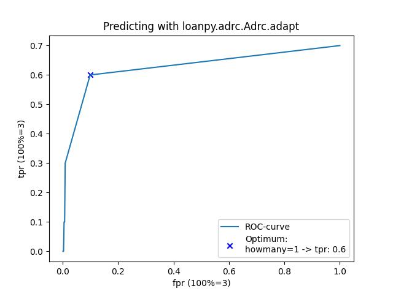

Intro¶
loanpy is a toolkit for solving various linguistic tasks such as:
predicting loanword adaptation (lateral transfers)
historical reconstruction of words (vertical transfers)
searching for potential (old) loanwords between two languages.
For an installation guide, click on the Cheese Shop logo. To see the newest but maybe less stable version, click on Octocat. For citation visit Zenodo:


For usage¶
qfysc.py¶
Quantify sound correspondences from etymological data.
Qfy¶
- class qfysc.Qfy(forms_csv=None, source_language=None, target_language=None, most_frequent_phonotactics=9999999, phonotactic_inventory=None, mode='adapt', connector=None, scdictbase=None, vfb=None)¶
Read etymological data and customise the way in which it shall be quantified later. Has 9 attributes.
These 5 params will be passed on to loanpy.helpers.Etym to inherit its 7 attributes:
- Parameters
forms_csv (pathlib.PosixPath | str | None, default=None) – The path to cldf’s forms.csv. For more details see loanpy.helpers.read_forms
source_language (str (options are listed in column "ID" in cldf / etc / languages.tsv), default=None) – The computational source language (can differ from linguistic source). This is the data FROM which we make predictions. For more details see loanpy.helpers.Etym.
target_language (str (options are listed in column "ID" in cldf / etc / languages.tsv), default=None) – The computational target language (can again differ from linguistic one). This is the language INTO which we make predictions. For more details see loanpy.helpers.Etym.
most_frequent_phonotactics (int, default=9999999) – The n most frequent structures that we want to accept into the phonotactic inventory of the target language. Sometimes a good idea to omit rare ones.
phonotactic_inventory (None | set | list, default=None) – All possible phonotactic structures in the target language. Will be extracted from target language if set to None. For more details see loanpy.helpers.Etym.read_phonotacticsinv.
These 4 params are used in own __init__ function to define 4 attributes:
- Parameters
mode ("adapt" | "reconstruct", default="adapt") – The mode in which sound correspondences will be extracted. Differences between the two modes: Different connectors, source and target gets flipped, different alignment. No phonotactic correspondences extracted if mode == “reconstruct”. Flows into self.mode. For more details see loanpy.qfysc.read_mode.
connector (tuple, default=None) – The strings that connect the linguistic (!) source word with the target adapted or reconstructed one. Flows into self.connector. Set to None if default settings (“<” and “<*”) should be used. For more details see loanpy.qfysc.read_connector.
scdictbase (None | dict | pathlib.PosixPath, default=None) – The sound correspondence dictionary base, a heuristic approach for predicting sound substitutions. loanpy.qfysc.Qfy.get_sound_corresp will combine sound substitutions gathered from etymological data with this dictionary. If combination should be skipped, set to None or {}. Flows into self.scdictbase. For more details see loanpy.helpers.Etym.get_scdictbase.
vfb (None | iterable, default=None, example: "əœʌ") – Placeholders for “any vowel”, “any front vowel”, “any back vowel”, as these can occur in etymological dictionaries. Tokeniser can only handle IPA-characters. Therefore placeholders have to be IPA-characters as well. Best is to choose IPA-characters that don’t occur in the phoneme inventory. By default, no placeholders are used. For a list of available ipa characters see ipa_all.csv’s column “ipa”
- Example
>>> from pathlib import Path >>> from loanpy.qfysc import Qfy, __file__ >>> path2forms = Path(__file__).parent / "tests" / "input_files" / "forms.csv" >>> qfy_obj = Qfy(mode="reconstruct", connector=["from", "from *"], scdictbase={"a": ["e", "o"], "b": ["p", "v"]}, vfb="əœʌ") >>> qfy_obj.mode "reconstruct" >>> qfy_obj.connector 'from *' >>> qfy_obj.scdictbase {"a": ["e", "o"], "b": ["p", "v"]} >>> qfy_obj.vfb 'əœʌ' >>> len(qfy_obj.__dict__) # 4 own +7 attributes inherited from loanpy.helpers.Etym 11
get sound correspondences¶
- Qfy.get_sound_corresp(write_to=None)¶
Convert an etymological dictionary to a dictionary of sound and phonotactic correspondences, their number of occurences, and IDs of cognate sets in which they occur. If self.mode==”reconstruct” we don’t extract phonotactic correspondences because that dimension is already captured through the alignment. Since in adapt we don’t capture this, we need to extract phonotactic correspondences from the data to later repair the structure based on that before substituting. This has to do with the different nature of lateral vs horizontal transfers: loanwords meet certain constraints immediately and need to be repaired immediately. While historical sound changes happen over a long period of time and I am not aware of an optimality theory based model with constraint-changes for historical linguistics. If it existed however,we could make vertical predictions with loanpy.adrc.Adrc.adapt.
- Parameters
write_to (None | pathlib.PosixPath | str, default=None) – Indicate if results should be written to a text file. If yes, provide the path. None means that no file will be written.
- Returns
list of 6 dicts. Dicts 0, 1, 2 capture phonological correspondences, dicts 3, 4, 5 phonotactical ones. dict0/dict3: the actual correspondences, dict1/dict4: How often each correspondence occurs in the data, dict2/dict5: list of cognates in which each correspondence occurs. Dicts 4, 5, 6 will be empty if self.mode==”reconstruct”. Set mode in loanpy.qfysc.Qfy. Note: dictionary 5 contains some randomness because set() is involved, for details see loanpy.qfysc.Qfy.get_phonotactics_corresp.
- Return type
[dict, dict, dict, dict, dict, dict]
- Example
>>> from pathlib import Path >>> from loanpy.qfysc import Qfy, __file__ >>> path2forms = Path(__file__).parent / "tests" / "input_files" / "forms.csv" >>> qfy_obj = Qfy(forms_csv=path2forms, source_language=1, target_language=2) >>> qfy_obj.get_sound_corresp() [{'C': ['x'], 'a': ['y'], 'b': [''], 'c': ['z']}, {'C<b': 1, 'x<C': 1, 'y<a': 1, 'z<c': 1}, {'C<b': [1], 'x<C': [1], 'y<a': [1], 'z<c': [1]}, {'VCC': ['CVC']}, {'CVC<VCC': 1}, {'CVC<VCC': [1]}] >>> qfy_obj.scdict [{'C': ['x'], 'a': ['y'], 'b': [''], 'c': ['z']}, {'C<b': 1, 'x<C': 1, 'y<a': 1, 'z<c': 1}, {'C<b': [1], 'x<C': [1], 'y<a': [1], 'z<c': [1]}, {'VCC': ['CVC']}, {'CVC<VCC': 1}, {'CVC<VCC': [1]}]
>>> # now reconstruct instead of adapt, and write file >>> from ast import literal_eval >>> from os import remove >>> path2scdict = Path(__file__).parent / "example_scdict2delete.txt" >>> qfy_obj = Qfy(forms_csv=path2forms, source_language=1, target_language=2, mode="reconstruct") >>> qfy_obj.get_sound_corresp(write_to=path2scdict) [{'#x': ['-'], '-#': ['-'], 'y': ['a'], 'z#': ['bc']}, {'#x<*-': 1, '-#<*-': 1, 'y<*a': 1, 'z#<*bc': 1}, {'#x<*-': [1], '-#<*-': [1], 'y<*a': [1], 'z#<*bc': [1]}, {}, {}, {}] >>> literal_eval(open(path2scdict, "r").read()) [{'#x': ['-'], '-#': ['-'], 'y': ['a'], 'z#': ['bc']}, {'#x<*-': 1, '-#<*-': 1, 'y<*a': 1, 'z#<*bc': 1}, {'#x<*-': [1], '-#<*-': [1], 'y<*a': [1], 'z#<*bc': [1]}, {}, {}, {}] >>> remove(path2scdict)
adrc.py¶
Adapt or reconstruct words, i.e. surf horizontally and vertically through the network of life
Adrc¶
- class adrc.Adrc(forms_csv=None, source_language=None, target_language=None, most_frequent_phonotactics=9999999, phonotactic_inventory=None, mode=None, connector=None, scdictbase=None, vfb=None, scdictlist=None)¶
Read etymological data and information about it generated by loanpy.qfysc.py and use it to predict loanword adaptations (lateral transfers) and reconstructions (vertical transfers).
The first 9 parameters are passed on to loanpy.qfysc.Qfy to inherit 11 attributes (of which 7 are inherited from loanpy.helpers.Etym). The last parameter is passed on to __init__ to create 5 own attributes, so 16 attributes in total
Define own attributes:
- Parameters
scdictlist (pathlib.PosixPath | str | None) – Path to data generated with loanpy.qfysc.Qfy.get_sound_corresp. (Dicts 0, 1, 2 capture phonological correspondences, dicts 3, 4, 5 phonotactical ones. dict0/dict3: the actual correspondences, dict1/dict4: How often each correspondence occurs in the data, dict2/dict5: list of cognates in which each correspondence occurs.
- Exmaple
>>> from loanpy.adrc import Adrc, __file__ >>> from pathlib import Path >>> path2folder = Path(__file__).parent / "tests" / "input_files" >>> path2sc = path2folder / "sc_ad_3cogs.txt" >>> path2forms = path2folder / "forms_3cogs_wot.csv" >>> adrc_obj = Adrc(scdictlist=path2sc, forms_csv=path2forms, source_language="WOT", target_language="EAH", mode="reconstruct", most_frequent_phonotactics=2) >>> adrc_obj.scdict # sound correspondence dictionary {'a': ['a'], 'd': ['d'], 'j': ['j'], 'l': ['l'], 'n': ['n'], 't͡ʃː': ['t͡ʃ'], 'ɣ': ['ɣ'], 'ɯ': ['i']} >>> adrc_obj.sedict # sum of examples dictionary {'a<a': 6, 'd<d': 1, 'i<ɯ': 1, 'j<j': 1, 'l<l': 1, 'n<n': 1, 't͡ʃ<t͡ʃː': 1, 'ɣ<ɣ': 2} >>> adrc_obj.edict # examples dictionary {'a<a': [1, 2, 3], 'd<d': [2], 'i<ɯ': [1], 'j<j': [3], 'l<l': [2], 'n<n': [3], 't͡ʃ<t͡ʃː': [1], 'ɣ<ɣ': [1, 2]} >>> adrc_obj.scdict_phonotactics # phonotactic correspondence dictionary {'VCCVC': ['VCCVC'], 'VCVC': ['VCVC'], 'VCVCV': ['VCVCV']} >>> adrc_obj.workflow OrderedDict() >>> len(adrc_obj.__dict__) # 5 own + 11 attributes inherited from loanpy.qfysc.Qfy 16
adapt¶
- Adrc.adapt(ipastr, howmany=1, cluster_filter=False, phonotactics_filter=False, repair_vowelharmony=False, sort_by_nse=False, max_repaired_phonotactics=0, max_paths2repaired_phonotactics=1, deletion_cost=100, insertion_cost=49, show_workflow=False)¶
Takes a word as input and makes predictions based on available data and heuristics how it could be repaired when entering target language as a loan.
- Parameters
ipastr (str) – The non-tokenised input word. Should consist only of valid ipa-characters, as defined in ipa_all.csv’s column “ipa”, even though the tokeniser handles invalid characters quite well. Make sure this is not an empty string.
howmany (int, default=1) – Indicate howmany guesses should be made.
max_repaired_phonotactics (int, default=1) – Indicate howmany of the most similar available structures from the phonotactic inventory should be taken into consideration.
max_paths2repaired_phonotactics (int, default=1) – Indicate in maximum howmany different ways each phonotactic structure should be repaired.
deletion_cost (int | float, default=100) – The cost of deleting a phoneme
insertion_cost (int | float, default=49) – The cost of inserting a phoneme
repair_vowelharmony (bool, default=False) – Indicate whether violations of front-back repair_vowelharmony should be repaired.
cluster_filter (bool, default=False) – This is a filter. It throws out all words that contain vowel or consonant clusters that are not documented in the target language.
sort_by_nse (bool, default=False) – Indicate whether results should be sorted by their likelihood. Can be costly to calculate.
phonotactics_filter (bool, default=False) – Indicate whether words should be filtered out from the final result if their phonotactic profile does not occur in the phonotactic inventory of target language.
show_workflow (bool, default=False) – Indicate if the workflow should be attached to the output. Useful for debugging and makes it less black-boxy. The single steps are added as keys to the Adrc-attribute <workflow>. The number of keys varies between 2-5, depending on the arguments passed on to this function. Keys “tokenised” and “adapted_phonotactics” are always there. Keys “donor_phonotactics” and “predicted_phonotactics” are only added if param <max_repaired_phonotactics> was set to greater than 0. Key “adapted_vowelharmony” is only added if param <repair_vowelharmony> was set to True.
- Example
>>> from loanpy.adrc import Adrc, __file__ >>> from pathlib import Path >>> path2folder = Path(__file__).parent / "tests" / "integration" / "input_files" >>> path2sc = path2folder / "sc_ad_handmade.txt" >>> path2forms = path2folder / "forms_3cogs_wot.csv" >>> adrc_obj = Adrc(scdictlist=path2sc, forms_csv=path2forms, source_language="WOT", target_language="EAH") >>> adrc_obj.adapt(ipastr="dade", howmany=5) "dady, datʰy, dedy, detʰy, tʰady" >>> # repair phonotactics with data hard-coded in "sc_ad_handmade.txt" >>> # Usually this is the same as data extracted from forms.csv >>> # But now due to illustrative purposes they are different. >>> adrc_obj.adapt(ipastr="dade", howmany=6, max_repaired_phonotactics=2) "dad, ded, tʰad, tʰed, dajdy, dejdy" >>> # max_paths2repaired_phonotactics=2 causes j to be inserted before AND after d >>> adrc_obj.adapt(ipastr="dade", howmany=6, max_repaired_phonotactics=2, max_paths2repaired_phonotactics=2) "dad, tʰad, dajdy, tʰajdy, dadjy, tʰadjy" >>> adrc_obj.vow2fb["e"] = "B" # let's assume "e" was a backvowel. >>> # repair repair_vowelharmony before substituting: dade->dadF >>> adrc_obj.adapt(repair_vowelharmony=True, ipastr="dade", howmany=6, max_repaired_phonotactics=2, max_paths2repaired_phonotactics=2) "dad, tʰad, dajdæ, tʰajdæ, dujdy, tʰujdy" >>> # phonotactic inventory for phonotactics_filter is calculated from forms.csv! >>> # contains only structures of the 3 words occuring in the target lg EAH >>> adrc_obj.phonotactic_inventory # this will filter out all results {'VCVC', 'VCVCV', 'VCCVC'} >>> adrc_obj.adapt(phonotactics_filter=True, repair_vowelharmony=True, ipastr="dade", howmany=6, max_repaired_phonotactics=2, max_paths2repaired_phonotactics=2) 'wrong phonotactics' >>> adrc_obj.phonotactic_inventory.add('CVCCV') # so let's assume CVCCV was in the inventory >>> adrc_obj.adapt(phonotactics_filter=True, repair_vowelharmony=True, ipastr="dade", howmany=6, max_repaired_phonotactics=2, max_paths2repaired_phonotactics=2) "dajdæ, tʰajdæ, dujdy, tʰujdy, dadjæ, tʰadjæ" >>> # now let's filter out all clusters undocumented in forms.csv >>> adrc_obj.clusters # only these clusters are allowed {'ld', 't͡ʃ', 'j', 'ɣ', 'a', 'n', 'ia'} >>> adrc_obj.adapt(cluster_filter=True, phonotactics_filter=True, repair_vowelharmony=True, ipastr="dade", howmany=6, max_repaired_phonotactics=2, max_paths2repaired_phonotactics=2) "wrong clusters" >>> # let's use a different sound correspondence file >>> path2sc = path2folder / "sc_ad_handmade2.txt" >>> adrc_obj = Adrc(scdictlist=path2sc, forms_csv=path2forms, source_language="WOT", target_language="EAH") >>> adrc_obj.phonotactic_inventory.add('CVCCV') >>> # let's ramp up the combinatorics >>> adrc_obj.adapt(howmany=1000, cluster_filter=True, phonotactics_filter=True, repair_vowelharmony=True, ipastr="dade", max_repaired_phonotactics=2, max_paths2repaired_phonotactics=2) 't͡ʃalda' >>> adrc_obj.clusters.add("d") # let's assume d was an allowed cluster >>> adrc_obj.adapt(howmany=1000, cluster_filter=True, phonotactics_filter=True, repair_vowelharmony=True, ipastr="dade", max_repaired_phonotactics=2, max_paths2repaired_phonotactics=2) 'dalda, t͡ʃalda' >>> # now sort results by likelihood (nse) and document workflow >>> adrc_obj.adapt(sort_by_nse=True, show_workflow=True, howmany=1000, cluster_filter=True, phonotactics_filter=True, repair_vowelharmony=True, ipastr="dade", max_repaired_phonotactics=2, max_paths2repaired_phonotactics=2) 't͡ʃalda, dalda' >>> adrc_obj.workflow OrderedDict([('tokenised', [['d', 'a', 'd', 'e']]), ('donor_phonotactics', ['CVCV']), ('predicted_phonotactics', [['CVC', 'CVCCV']]), ('adapted_phonotactics', [[['d', 'a', 'd'], ['d', 'a', 'C', 'd', 'e'], ['d', 'a', 'd', 'C', 'e']]]), ('adapted_vowelharmony', [[['d', 'a', 'd'], ['d', 'a', 'C', 'd', 'e'], ['d', 'a', 'd', 'C', 'e']]]), ('before_combinatorics', [[[['d', 't͡ʃ'], ['a', 'e'], ['d', 't͡ʃ']], [['d', 't͡ʃ'], ['a', 'e'], ['l'], ['d', 't͡ʃ'], ['e', 'a']], [['d', 't͡ʃ'], ['a', 'e'], ['d', 't͡ʃ'], ['l'], ['e', 'a']]]])])
reconstruct¶
- Adrc.reconstruct(ipastr, howmany=1, clusterised=True, phonotactics_filter=False, vowelharmony_filter=False, sort_by_nse=False, *args)¶
Predicts past forms of a word based on data. Should theoretically also work for forward reconstructions, but not tested yet. Word initial and word final sounds/clusters are tagged with an “#”. In addition to this, every word gets a “#-” and a “-#” slapped to its front and back, to capture prefixes and suffixes that may have appeared or disappeared. If parameters <phonotactics_filter>, <vowelharmony_filter> and <sort_by_nse> are all set to False, the output will be a regular expression of the type “^(a|b)(c|d)(e)$”. If one of those parameters is set to True, combinatorics will be applied and the outputted regular expression will be of the type “(^ace$|^ade$|^bce$|^bde$)”.
- Parameters
ipastr (str) – The non-tokenised input word. Should consist only of valid ipa-characters, as defined in ipa_all.csv’s column “ipa”, even though the tokeniser handles invalid characters quite well. Make sure this is not an empty string.
howmany (int, default=1) – Indicate howmany guesses should be made.
clusterised (bool, default=True) – If set to True, this will slice up the input word into consonant and vowel clusters and look for those keys in the sound change dictionary.
phonotactics_filter (bool, default=False) – Indicate whether words should be filtered out from the final result if their phonotactic profile does not occur in the phonotactic inventory of target language.
vowelharmony_filter (bool, default=False) – Indicate whether words violating the constraint front-back vowelharmony_filter (a word can contain only front or only back vowels) should be filtered.
sort_by_nse – Indicate whether results should be sorted by their normalised sum of examples (likelihood measure for etymologies). Can be costly to calculate but still cheaper and more elegant than replacing itertool’s product function, which does this (from its documentation): “The leftmost iterators are in the outermost for-loop, so the output tuples cycle in a manner similar to an odometer (with the rightmost element changing on every iteration)” :type sort_by_nse: bool, default=False
args – This does nothing. Just so sanity.eval_one to be able to pass on a consistent list of args to both adapt and reconstruct.
- Returns
A regular expression approximating the indicated number of predicted reconstructions
- Return type
str
- Example
>>> from loanpy.adrc import Adrc, __file__ >>> from pathlib import Path >>> path2folder = Path(__file__).parent / "tests" / "integration" / "input_files" >>> path2sc = path2folder / "sc_rc_3cogs.txt" >>> adrc_obj = Adrc(scdictlist=path2sc, mode="reconstruct") >>> adrc_obj.reconstruct("kriekrie") # clusterise, missing from data '#kr, ie, kr, ie# not old' >>> adrc_obj.reconstruct("kriekrie", clusterised=False) # tokenise '#k, i, e, k, i, e# not old' >>> adrc_obj.reconstruct("aːruː") '^(a)(n)(a)(at͡ʃi)$' >>> adrc_obj.reconstruct("aːruː", howmany=2) '^(a)(n)(a)(at͡ʃi|ɣ)$' >>> path2forms = path2folder / "forms_3cogs_wot.csv" >>> # read etymological data to get phonotactic inventory for filter >>> adrc_obj = Adrc(forms_csv=path2forms, source_language="H", target_language="EAH", scdictlist=path2sc, mode="reconstruct") >>> adrc_obj.reconstruct("aːruː", howmany=2, phonotactics_filter=True) # only CVCV in inventory '^anaɣ$' >>> adrc_obj.reconstruct("aːruː", howmany=1, phonotactics_filter=True) # low howmany -> empty filter 'wrong phonotactics' >>> adrc_obj.vow2fb["i"] = "B" # let's assume "i" was a back vowel >>> adrc_obj.reconstruct("aːruː", howmany=4, vowelharmony_filter=True) '^anaɣ$' >>> # "anaat͡ʃi" got filtered out b/c it contains a front and back vowel >>> # violation of constraint "vowelharmony_filter" in terms of optimality theory >>> adrc_obj.reconstruct("aːruː", howmany=1, vowelharmony_filter=True) # low howmany -> empty filter 'wrong vowel harmony' >>> adrc_obj.vow2fb["i"] = "F" # make "i" a front vowel again >>> adrc_obj.reconstruct("aːruː", howmany=4, vowelharmony_filter=True) # nothing gets filtered "^anaat͡ʃi$|^anaɣ$" >>> adrc_obj.reconstruct("aːruː", howmany=4, sort_by_nse=True) >>> # examples per phoneme divided by word length is higher for "anaɣ" "^anaɣ$|^anaat͡ʃi$"
sanity.py¶
Check how sane the model is by evaluating predictions.
evaluate all¶
- sanity.eval_all(forms_csv, target_language, source_language, mode='adapt', most_frequent_phonotactics=9999999, phonotactic_inventory=None, connector=None, scdictbase=None, vfb=None, guesslist=[10, 50, 100, 500, 1000], clusters=False, phonotactics_filter=False, vowelharmony=False, sort_by_nse=False, max_repaired_phonotactics=1, max_paths2repaired_phonotactics=1, deletion_cost=100, insertion_cost=49, show_workflow=False, path2cache=False, crossval=True, writesc=False, write_to=None)¶
Trains crossvalidated models, evaluates and visualises predictions. 23 args in total, only 3 positional. Best to run this from a loop with different parameter settings and decorated with @loanpy.sanity.cache
The first 9 args are passed on to loanpy.adrc.Adrc.__init__, out of which the first 3 are positional:
- Parameters
forms_csv (pathlib.PosixPath | str) – The path to cldf’s forms.csv of the etymological dictionary. Will be used to initiate loanpy.adrc.Adrc. For more details see loanpy.helpers.read_forms.
target_language (str (options are listed in column "ID" in cldf / etc / languages.tsv), default=None) – The computational target language. Will be used to initiate loanpy.adrc.Adrc. For more details see loanpy.helpers.Etym.
source_language (str (options are listed in column "ID" in cldf / etc / languages.tsv), default=None) – The computational source language. Will be used to initiate loanpy.adrc.Adrc. For more details see loanpy.helpers.Etym.
mode ("adapt" | "reconstruct", default="adapt") – Indicate whether predictions should be made with loanpy.adrc.Adrc.reconstruct or loanpy.adrc.Adrc.adapt (also sound correspondences will be extracted with loanpy.qfysc.Qfy.get_sound_corresp in the given mode). See also loanpy.qfysc.Qfy for more details.
most_frequent_phonotactics (int, default=9999999) – The n most frequent structures to accept into the target language’s phonotactic inventory. For more details see loanpy.helpers.Etym.read_phonotacticsinv.
phonotactic_inventory (list, default=None) – Chance to plug in phonotactic inventory manually. If None, will be extracted automatically from data. For more details see loanpy.helpers.Etym.read_phonotacticsinv.
connector (iterable of len 2) – The string that connects the left side of an etymology with the right side for adapting vs reconstructing. For more details see loanpy.qfysc.read_connector
scdictbase (None | pathlib.PosixPath | dict) – Indicate whether sound correspondences based on data should be combined with the (rather large) dictionary of heuristic correspondences. For pitfalls see param <writesc>. Don’t pass a boolean. None means no, pathlib.PosixPath, dict, or str means yes.
vfb – Indicate whether there should be placeholder vowels. For more details see loanpy.qfysc.Qfy.
The next 5 args are passed on to loanpy.adrc.Adrc.adapt if mode=”adapt” but to loanpy.adrc.Adrc.reconstruct if mode=”reconstruct”:
- Parameters
guesslist (list of int) – The list of number of guesses to be made. Will be passed into loanpy.adrc.Adrc.adapt’s or loanpy.adrc.Adrc.reconstruct’s parameter <howmany> in a loop. Loop breaks as soons as prediction was correct.
clusters (bool, def=False) – Will be passed to loanpy.adrc.Adrc.adapt’s parameter <cluster_filter> or loanpy.adrc.Adrc.reconstruct’s parameter <clusterised>. Indicate whether predictions that contain consonant or vowel clusters that are not documented in the target language should be filtered out if passed on to adapt() or if the tokeniser should clusterise the input-word and look in the sound correspondence dictionary for clusters as keys to predictions if passed on to reconstruct().
phonotactics_filter (bool, default=False) – Indicate if predictions made by loanpy.adrc.Adrc.adapt and loanpy.adrc.Adrc.reconstruct should be filtered out if they consist of a phonotactic structure that is not contained in the language’s phonotactic inventory. For more details see loanpy.helpers.Etym.read_phonotacticsinv.
vowelharmony (bool, default=False) – Will be passed to loanpy.adrc.Adrc.adapt’s parameter <repair_vowelharmony> or loanpy.adrc.Adrc.reconstruct’s parameter <vowelharmony_filter>. Indicate whether vowelharmony should be repaired if passed on to adapt() or if results violating the constraint “front-back vowelharmony” should be filtered out if passed on to reconstruct().
sort_by_nse (bool | int, default=False) – Indicate if or howmany predictions should be sorted by likelihood. True and False will sort all or none, just like float(“inf”) and 0. Passing an Integer will not sort the entire output. Instead it will pick as many of the words with the highest NSE (likelihood) as indicated. This can save quite some unnecessary calculations.
The next 5 args are passed on to loanpy.adrc.Adrc.adapt if mode=”adapt” but if mode=”reconstruct” they will not be used.
- Parameters
max_repaired_phonotactics (int, default=1) – The maximum number of phonotactic strucutres into which the original string should be transformed. Will be passed into loanpy.adrc.Adrc.adapt’s parameter <max_repaired_phonotactics>
max_paths2repaired_phonotactics (int, default=1) – The maximum number of cheapest paths through which a phonotactic structure can be repaired. Will be passed into loanpy.adrc.Adrc.adapt’s parameter <max_paths2repaired_phonotactics>
deletion_cost (int, float, default=100) – The cost of deleting a phoneme
insertion_cost (int, float, default=49) – The cost of inserting a phoneme
show_workflow (bool, default=False) – Indicate whether the workflow should be displayed in the output of loanpy.adrc.Adrc.adapt. Useful for debugging.
The next 4 args are not passed on but will be used in this module.
- Parameters
path2cache (pathlib.PosixPath | str, None, False, default=False) – The path to the csv-file in which information about input-parameters and evaluated results is stored. If path points to a non-existent file, the indicated file will be created. If set to None, it will be written to cldf’s folder “etc” (concluded from the path provided in parameter <forms_csv>) and will be called f”opt_param_{target_language}_{source_language}”. If set to False, this file will be ignored and no data written to it. Only passed to cache if its written around this function as a decorator. For more information see loanpy.sanity.cache.
crossval (bool) – Indicate if results should be cross-validated. If true, the model with which we predict an adaptation or a reconstruction of a word will be trained without that word. That means that all 3 inventories (phoneme, clusters, phonotactic) are also concluded from data that excludes that specific row.
writesc (bool, def=False) – Indicate if loanpy.qfysc.Qfy.get_sound_corresp should write its output to a file. If yes and if crossval is True, provide a path to a folder (!). If yes and crossval is False, provide a path to a file. This is useful for debugging. Careful: Since one file will be written in every round of the cross-validation loop (as many iterations as there are predictions to evaluate), the total storage room taken up by the files can get large. E.g. if we want to evaluate 500 words and scdictbase is 1.6MB, the entire folder will take up 500*1.6MB. There are two ways to avoid this: If writesc=True, make sure to set either crossval=False, this will only write one soundchange.txt file. Or set scdictbase=None, since this is the part that takes up the most storage. Predictions will be blurred in both cases but for debugging this is usually enough.
write_to (None | pathlib.PosixPath | str, default=None) – Indicate whether results should be written to a csv-file and plotted to a jpg. If yes, provide the path to the file including the “.csv”-extension. None means that no file will be written.
- Returns
Adds two columns to the input data frame: “guesses”, which indicate howmany guesses were necessary to make the correct prediction (if inf, all predictions were wrong) and best guess, which shows the closest guess (if combinatorics were applied, this is 1 word, in case of (a)(b)(c) type regexes the entire regex is just kept.
- Return type
pandas.core.frame.DataFrame
- Example
>>> from pathlib import Path >>> from loanpy.sanity import eval_all, __file__ >>> path2cog27 = Path(__file__).parent / "tests" / "input_files" / "forms_27cogs.csv" >>> path2out = Path(__file__).parent / "tests" / "output_files" / "eval_27cogs.csv" >>> eval_all(forms_csv=path2cog27, target_language="EAH", source_language="WOT", mode="reconstruct", clusters=True, sort_by_nse=True, write_to=path2out) [inspect result in folder output_files]
loanfinder.py¶
Find (old) loanwords between two languages
Search¶
- class loanfinder.Search(path2donordf=None, path2recipdf=None, donorcol='ad', recipcol='rc', phondist=0, phondist_msr='hamming_feature_edit_distance', semsim=1, semsim_msr=<function gensim_multiword>, scdictlist_ad=None, scdictlist_rc=None)¶
Define the two word lists, the measurements to calculate phonological distance and semantic similarity and the thresholds below or above which to accept matches.
- Parameters
path2donordf (pathlib.PosixPath | str | None, default=None) – The path to forms.csv of the donor language containing a column of predicted adaptations into the recipient language.
path2recipdf (pathlib.PosixPath | str | None, default=None) – The path to forms.csv of the recipient language, containing a column of predicted backward-reconstructions stored as regular expressions.
donorcol (str, default="ad") – The name of the column in the donor language’s forms.csv containing a column of predicted adaptations into the tentative recipient language.
recipcol (str, default="rc") – The name of the column in the recipient language’s forms.csv containing a column of words in that language. If we are searching for old loanwords, this column can consist of regular expressions that represent backward reconstructions of present-day words.
phondist (int, default=0) – The maximal phonological distance between two words. By default, matches have to be identical.
phondist_msr ("doglo_prime_distance" | "dolgo_prime_distance_div_maxlen" | "fast_levenshtein_distance" | "fast_levenshtein_distance_div_maxlen" | "feature_difference" | "feature_edit_distance" | "feature_edit_distance_div_maxlen" | "hamming_feature_edit_distance" | "hamming_feature_edit_distance_div_maxlen" | "hamming_substitution_cost" | "jt_feature_edit_distance" | "jt_feature_edit_distance_div_maxlen" | "jt_hamming_feature_edit_distance" | "jt_hamming_feature_edit_distance_div_maxlen" | "jt_weighted_feature_edit_distance" | "jt_weighted_feature_edit_distance_div_maxlen" | "levenshtein_distance", default="hamming_feature_edit_distance") – The name of the phonological distance measure, which has to be a method of panphon.distance.Distance
semsim (int (float between -1 and 1 for gensim)) – The minimal semantic similarity between the meaning of words. By default, meaning have to be identical
semsim_msr (function of type func(a:str, b:str) -> int) – The function with which to measure semantic similarity.
scdictlist_ad (list of 6 dicts. Dicts 0, 1, 2 capture phonological correspondences, dicts 3, 4, 5 phonotactical ones. dict0/dict3: the actual correspondences, dict1/dict4: How often they occur in the data, dict2/dict5: list of cognates in which they occur.) – list of correspondence dictionaries between tentative donor and recipient language generated with loanpy.qfysc.get_sound_corresp. Not a dictionary, therefore sequence important. Will be used in loanpy.loanfinder.Search.likeliestphonmatch to calculate likelihood (nse) from predicted adaptation vs source word.
scdictlist_rc (list of 6 dicts. Dicts 0, 1, 2 capture phonological correspondences, dicts 3, 4, 5 phonotactical ones. dict0/dict3: the actual correspondences, dict1/dict4: How often they occur in the data, dict2/dict5: list of cognates in which they occur.) – list of correspondence dictionaries between present-day language and past stage of that language generated with loanpy.qfysc.get_sound_corresp. Not a dictionary, therefore sequence important. Will be used in loanpy.loanfinder.Search.likeliestphonmatch to calculate likelihood (nse) from predicted reconstruction vs source word.
- Example
>>> from pathlib import Path >>> from loanpy.loanfinder import Search, __file__ >>> path2rec = Path(__file__).parent / "tests" / "input_files"/ "hun.csv" >>> path2don = Path(__file__).parent / "tests" / "input_files"/ "got.csv" >>> path2sc_ad = Path(__file__).parent / "tests" / "input_files" / "sc_ad_3cogs.txt" >>> path2sc_rc = Path(__file__).parent / "tests" / "input_files" / "sc_rc_3cogs.txt" >>> search_obj = Search(path2donordf=path2don, path2recipdf=path2rec, scdictlist_ad=path2sc_ad, scdictlist_rc=path2sc_rc)
loans¶
- Search.loans(write_to=False, postprocess=False, merge_with_rest=False)¶
Searches for phonological matches and calculates their semantic similarity. Returns candidate list of loans.
- Parameters
write_to (pathlib.PosixPath | str | None | False, default=False) – indicate if results should be written to file. If yes, provide path.
postprocess (bool, default=False) – Indicate if results should be postprocessed. See loanpy.loanfinder.Search.postprocess for more details
merge_with_rest (bool, default=False) – Indicate if additional info from input data frame columns should be copied into the output data frame. Helps with quick debugging sometimes. See loanpy.loanfinder.Search.merge_with_rest for more details
- Returns
data frame with potential loanwords
- Return type
pandas.core.series.Series
- Example
>>> from pathlib import Path >>> from loanpy.loanfinder import Search, __file__ >>> from loanpy.helpers import plug_in_model >>> from gensim.models import word2vec >>> from gensim.test.utils import common_texts >>> in_got = path2donordf=Path(__file__).parent / "tests" / "input_files" / "loans_got.csv" >>> in_hun = path2donordf=Path(__file__).parent / "tests" / "input_files" / "loans_hun.csv" >>> search_obj = Search(in_got, in_hun, semsim=0.1) >>> # plug in dummy vectors, api (default) would need internet + a minute to load >>> plug_in_model(word2vec.Word2Vec(common_texts, min_count=1).wv) >>> search_obj.loans() match recipdf_idx Meaning_x Meaning_y gensim_multiword 0 blub 0 computer, interface human 0.109408
For internal calls¶
helpers.py¶
Contains helper functions and class Etym, which are called by other modules. But some functions may be useful for other linguistic tasks.
- class loanpy.helpers.Etym(forms_csv=None, source_language=None, target_language=None, phoneme_inventory=None, cluster_inventory=None, phonotactic_inventory=None, distance_measure='weighted_feature_edit_distance', most_frequent_phonotactics=9999999)¶
Bases:
objectClass that is based on 2 datasets: The first is static, and is ipa_all.csv from panphon, together with its “spinoff” cvfb.txt. The second has to be defined through the init args and will be data extracted from a forms.csv (cldf data standard, insert link here later). The class methods eventually all rely on panphon / data / “ipa_all.csv”. loanpy’s ipa_all.csv is slightly modified but I didn’t keep track of the modifications. I remember that I changed the status of the glottal stop at least. And added “C”, “V” to the bottom. Todo: Plug back in the original ipa_all.csv.Define consonants, vowels, front vowels, and back vowels based on David R. Mortensen, Patrick Littell, Akash Bharadwaj, Kartik Goyal, Chris Dyer, Lori Levin (2016). “PanPhon: A Resource for Mapping IPA Segments to Articulatory Feature Vectors.” Proceedings of COLING 2016, the 26th International Conference on Computational Linguistics: Technical Papers, pages 3475–3484, Osaka, Japan, December 11-17 2016. (Based on SPE by Chomsyk&Halle). Turn forms.csv into a pandas data frame, and extract following information from it: phoneme phoneme_inventory: a set of all phonemes that occur in the language’s words, cluster_inventory: a set of all consonant and vowel cluster_inventory occuring in the language, phonotactic_inventory: a list of phonotactic structures that occur in the language, sorted according to their frequency
- Parameters
forms_csv (pathlib.PosixPath | str | None) – a forms.csv of the cldf data standard (https://cldf.clld.org/)
source_language (str) – The technical source language as defined in cldf’s etc / “languages.tsv”. This can be confusing, as sometimes the technical source language for the predictions can be the linguistic target language, e.g. when we are backward reconstructing. But when we are adapting loanwords the technical and the linguistic source word are usually the same.
target_language (str) – The technical target language as defined in cldf’s etc / “languages.tsv”. For caveats see param source_language
phoneme_inventory (None | list | set) – The phoneme phoneme_inventory. If None, it will be extracted automatically from forms.csv
cluster_inventory (None | list | set) – All consonant and vowel cluster_inventory that occur in the language. If None, will be automatically extracted from forms.csv
phonotactic_inventory (None | list | set) – All phonetic structures (“CVCV”) that occur in the language
distance_measure (function) – The distance measure. See help(read_dst)
phonotactics_most_frquent (int) – The how many most frequently occuring phonotactic structures should we allow to be part of the phoneme_inventory.
- Example
>>> from pathlib import Path >>> from loanpy.helpers import Etym, __file__ >>> path2forms = Path(__file__).parent / "tests" / "integration" / "input_files" / "forms.csv" >>> etym_obj = Etym(forms_csv=path2forms, source_language=1, target_language=2) >>> etym_obj.phon2cv["k"] 'C' >>> etym_obj.vow2fb["e"] 'F' >>> etym_obj.distance_measure("p", "b") 0.25 >>> etym_obj.dfety Target_Form Source_Form Cognacy 0 xyz abc 1 >>> etym_obj.phoneme_inventory {'y', 'z', 'x'} >>> etym_obj.cluster_inventory {'y', 'z', 'x'} >>> etym_obj.phonotactic_inventory {'CVC'} >>> len(etym_obj.__dict__) 7
- adapt_harmony(ipalist)¶
Called by loanpy.adrc.Adrc.adapt. Counts how many front and back vowels there are in a word. If there are more back than front vowels, all front vowels will be replaced by a “B”, if there are more front than back vowels, the back vowels will be replaced by “F”, and if the word has equally many front as back vowels, both options will be returned.
- Parameters
ipalist (list of str | str) – a list or a string of phonemes
- Returns
a tokenised word with repaired vowelharmony
- Return type
list of listt of str
- Example
>>> from loanpy.helpers import Etym >>> hp = Etym() >>> hp.adapt_harmony('kɛsthɛj') [['k', 'ɛ', 's', 't', 'h', 'ɛ', 'j']] >>> hp.adapt_harmony(['ɒ', 'l', 'ʃ', 'oː', 'ø', 'r', 'ʃ']) [['ɒ', 'l', 'ʃ', 'oː', 'B', 'r', 'ʃ']] >>> hp.adapt_harmony(['b', 'eː', 'l', 'ɒ', 't', 'ɛ', 'l', 'ɛ', 'p']) [['b', 'eː', 'l', 'F', 't', 'ɛ', 'l', 'ɛ', 'p']] >>> hp.adapt_harmony(['b', 'ɒ', 'l', 'ɒ', 't', 'o', 'n', 'k', 'ɛ', 'n', 'ɛ', 'ʃ', 'ɛ']) [['b', 'F', 'l', 'F', 't', 'F', 'n', 'k', 'ɛ', 'n', 'ɛ', 'ʃ', 'ɛ'], ['b', 'ɒ', 'l', 'ɒ', 't', 'o', 'n', 'k', 'B', 'n', 'B', 'ʃ', 'B']]
- get_fb(ipalist, turnto='F')¶
Called by adapt_harmony. Turns front vowels to back ones if turnto=”B”, but turns back vowels to front ones if turnto=”F”
- Parameters
ipalist (list) – a tokenised ipa-string
turnto ({"F", "B"}) – turn back vowels to front ones or vice verse
- Returns
a tokenised word with some vowels replaced by “F” or “B”.
- Return type
list
- Example
>>> from loanpy import helpers >>> hp = helpers.Etym() >>> hp.get_fb(['ɒ', 'l', 'ʃ', 'oː', 'ø', 'r', 'ʃ'], turnto="B") ['ɒ', 'l', 'ʃ', 'oː', 'B', 'r', 'ʃ']
- get_inventories(phoneme_inventory=None, cluster_inventory=None, phonotactic_inventory=None, most_frequent_phonotactics=9999999)¶
- get_scdictbase(write_to=None, most_common=inf)¶
Call manually in the beginning. Loop through ipa_all.csv and rank most similar phonemes from phoneme_inventory. Could also turn ipa_all.csv into a square of 6358*6358 phonemes and just use that file for all future cases but that would use an estimated 500MB per type of distance measure. So more economical to calculate it this way. Will still, depending on size of phoneme phoneme_inventory, take up about 2MB. result is returned, assigned to self.scdictbase and optionally written. Usually there is very little data available on sound substitutions and the ones available give only very small instight into all possibilities. The idea here is therefore that any sound that is not contained in a language’s phoneme phoneme_inventory will be replaced by the most similar available one(s). The available sound substitutions based on etymological data will be combined with this heuristics, if available.
- Parameters
write_to (None | <class 'pathlib.PosixPath'> | str) – If or where the output should be written.
most_common – Add only this many most similar phonemes to scdictbase. By default the entire phoneme phoneme_inventory will be ranked.
- Returns
A heuristic approach to sound substitution in loanword adaptation
- Return type
dict
- Example
>>> from pathlib import Path >>> from loanpy.helpers import Etym, __file__ >>> etym_obj = Etym(forms_csv=Path(__file__).parent / "tests" / "integration" / "input_files" / "forms.csv", source_language=1, target_language=2) >>> etym_obj.get_scdictbase() (returns the entire dictionary with phoneme_inventory ranked according to similarity) >>> etym_obj.scdictbase["i"] ["y", "x", "z"]
- harmony(ipalist)¶
Called by loanpy.helpers.Etym.adapt_harmony and loanpy.adrc.Adrc.reconstruct. Returns True if there are only front or only back vowels in a word else False.
- Parameters
ipalist ({list of str, str}) – the word that should be analysed
- Returns
Does the word have front-back vowelharmony?
- Return type
bool
- Example
>>> from loanpy import helpers >>> hp = helpers.Etym() >>> hp.harmony("bot͡sibot͡si") False
>>> from loanpy import helpers >>> hp = helpers.Etym() >>> hp.harmony(["t", "ɒ", "r", "k", "ɒ"]) True
- rank_closest(ph, howmany=inf, inv=None)¶
Called by get_scdictbase. Sort self.phoneme_inventory by distance to input-phoneme.
- Parameters
ph (str (valid chars: col "ipa" in ipa_all.csv)) – phoneme to which to rank the phoneme_inventory
howmany ({int, float("inf")}) – howmany of the most similar to pick
inv (list | set) – To plug in phoneme phoneme_inventory manually if necessary
- Returns
the phoneme phoneme_inventory ranked by similarity (most similar first)
- Rytpe
str (elements separates by “, “)
- Example
>>> from pathlib import Path >>> from loanpy.helpers import Etym, __file__ >>> etym_obj = Etym() >>> etym_obj.rank_closest(ph="d", inv=["r", "t", "l"], howmany=1) 't' >>> etym_obj = Etym(phoneme_inventory=["a", "b", "c"]) >>> etym_obj.rank_closest(ph="d") 'b, c, a'
- rank_closest_phonotactics(struc, howmany=9999999, inv=None)¶
Called by loanpy.qfysc.Qfy.get_phonotactics_corresp. Sort self.phonotactic_inventory by distance to given phonotactic structure using editdistance with two operations (insert (cost: 49), delete (cost: 100)).
- Parameters
struc (str (consisting of "C"s and "V"s only)) – The phonetic structure to which to rank the phoneme_inventory
howmany ({int, float("inf")}) – Howmany of the most similar structures should be picked
inv (list | set) – To plug in the phonotactic structure phoneme_inventory manually if necessary
- Returns
the phonotactic phoneme_inventory ranked by similarity (most similar first)
- Rytpe
str (elements separates by “, “)
>>> from pathlib import Path >>> from loanpy.helpers import Etym, __file__ >>> etym_obj = Etym(phonotactic_inventory=["CVC", "CVCVV", "CCCC", "VVVVVV"]) >>> etym_obj.rank_closest_phonotactics(struc="CVCV", howmany=1) 'CVCVV' >>> etym_obj = Etym() >>> etym_obj.rank_closest_phonotactics(struc="CVCV", howmany=3,inv=["CVC", "CVCVV", "CCCC", "VVVVVV"]) "CVCVV, CVC, CCCC"
- read_inventory(inv, func=functools.partial(<function tokenise>, replace=True))¶
Called by loanpy.helpers.Etym.__init__; Calculates and returns phoneme phoneme_inventory from a list of words. Param <inv> is if phoneme_inventory should not be calculated but manually plugged in.
- Parameters
inv (set) – a set of phonemes that occure in given language. if inv is None, inv will be calculated from forms else inv will be returned.
forms (list of str) – a list of words occuring in giving language
func (function) – the tokeniser to split words into phonemes
- Returns
The phoneme phoneme_inventory of the language
- Return type
set | None | same as input type
- Example
>>> from loanpy.helpers import read_inventory >>> read_inventory(None, ["fdedaeda", "badea", "fdddedab"]) {'b', 'd', 'f', 'a', 'e'}
>>> from loanpy.helpers import read_inventory, clusterise >>> read_inventory(None, ["fdedaeda", "badea", "fdddedab"], clusterise) {'b', 'ea', 'd', 'fd', 'a', 'ae', 'fddd', 'e'}
- read_phonotacticsinv(phonotactic_inventory=None, howmany=9999999)¶
Called by loanpy.helpers.Etym.__init__; Returns phoneme_inventory of the most frequent x phonotactic structures. Caveat: The map function seems to swallow errors that would be otherwise triggered by Counter. E.g. if you use a float (including float(“inf”)) for param <howmany>, an empty string will be returned.
- Parameters
phonotactic_inventory (None | list | set | same type as input) – Possibility to plug in the phoneme_inventory manually.
forms (list | None) – a list of words in a language
howmany (int) – howmany most frequent structures should be added to phoneme_inventory
- Returns
all possible phonotactic structures documented in the data
- Return type
list
- Example
>>> from loanpy.helpers import Etym >>> etym = Etym() >>> etym.read_phonotacticsinv(forms=["ab", "ab", "aa", "bb", "bb", "bb"]) {'VV', 'CC', 'VC'}
>>> from loanpy.helpers import Etym >>> etym, forms = Etym(), ["ab", "ab", "aa", "bb", "bb", "bb"] >>> etym.read_phonotacticsinv(forms=forms, howmany=1) ['CC'] # b/c that's the nr 1 most frequent structure
>>> from loanpy.helpers import Etym >>> etym, forms = Etym(), ["ab", "ab", "aa", "bb", "bb", "bb"] >>> etym.read_phonotacticsinv(forms=forms, howmany=2) ['CC', 'VC'] # b/c that's the 2 most frequent structures
- word2phonotactics_keepcv(ipa_in)¶
Not called by any function. Returns the phonotactic profile of an ipa-string while keeping Cs and Vs. Originally written for sanity.py but currently not used anywhere.
- Example
>>> from loanpy import helpers >>> hp = helpers.Etym() >>> hp.word2phonotactics_keepcv("CloVl") 'CCVVC'
- word2struc(ipa_in)¶
Called by loanpy.helpers.Etym.__init__; loanpy.qfysc.Qfy.get_phonotactics_corresp, loanpy.adrc.Adrc.adapt, loanpy.adrc.Adrc.adapt_phonotactics, loanpy.adrc.Adrc.reconstruct, and loanpy.santiy.write_workflow.
Returns the phonotactic profile of an ipa-string.
- Parameters
ipa_in (str | list) – a string or list consisting of IPA-characters. if input is string, it will be tokenised.
- Returns
the phonotactic profile of the word
- Return type
str
- Example
>>> from loanpy import helpers >>> hp = helpers.Etym() >>> hp.word2struc("lol") 'CVC'
- exception loanpy.helpers.InventoryMissingError¶
Bases:
ExceptionCalled by lonapy.helpers.Etym.rank_closest and loanpy.helpers.Etym.rank_closest_phonotactics if neither forms.csv is defined nor the phonotactic/phoneme phoneme_inventory is plugged in.
- loanpy.helpers.apply_edit(word, editops)¶
Called by loanpy.adrc.Adrc.adapt_phonotactics. Applies a list of human readable edit operations to a string.
- Parameters
word (an iterable (e.g. list of phonemes, or string)) – The input word
editops (list or tuple of strings) – list of (human readable) edit operations
- Returns
transformed input word
- Return type
list of str
- Example
>>> from loanpy.helpers import apply_edit >>> apply_edit(["l", "ó"], ('substitute l by h', 'keep ó')) ['h', 'ó'] >>> apply_edit("ló", ('keep C', 'insert C', 'insert V', 'keep V')) ['l', 'C', 'V', 'ó'] >>> apply_edit("ló", ('insert C', 'keep C', 'insert V', 'keep V')) ['C', 'l', 'V', 'ó']
- loanpy.helpers.cldf2pd(dfforms, source_language=None, target_language=None)¶
Called by loanpy.helpers.Etym.__init__; Converts a cldf-csv to a pandas data frame. Returns None if dfforms is None, so class can be initiated without args too. Runs through forms.csv and creates a new data frame the following way: Checks if a cognate set contains words from both, source and target language. If yes: word from source lg goes to column “Source_Form”, word from target lg goes to column “Target_Form” and the number of the cognate set goes to column “Cognacy”. Note that if a cognate set doesn’t contain words from src and tgt lg, that cognate set is skipped.
- param dfforms
Takes the output of read_forms() as input
- type dfforms
<class ‘pandas.core.frame.DataFrame’> | None
- Parameters
source_language –
The languages who’s cognates go to column “Source_Forms” :type source_language: <str>
- param target_language
The languages who’s cognates go to column “Target_Forms”
- type target_language
<str>
- returns
forms.csv data frame with re-positioned information
- rtype
<class ‘pandas.core.frame.DataFrame’> | None
- Example
>>> from pathlib import Path >>> from loanpy.helpers import __file__, cldf2pd, read_forms >>> path2forms = Path(__file__).parent / "tests" / "input_files" / "forms.csv" >>> forms = read_forms(path2forms) >>> cldf2pd(forms, source_language=1, target_language=2) Target_Form Source_Form Cognacy 0 xyz abc 1
- loanpy.helpers.combine_ipalists(wrds)¶
Called by loanpy.adrc.Adrc.adapt. Combines and flattens a list of lists of sound change lists.
- Parameters
wrds (list of lists of lists of str) – list of words consisting of lists of sound change lists
- Returns
a list of words without empty strings as elements
- Return type
list of strings
- Example
>>> from loanpy.helpers import combine_ipalists >>> combine_ipalists([[["a", "b"], ["c"], ["d"]], [["e", "f"], ["g"], ["h"]]]) ['acd', 'bcd', 'egh', 'fgh']
- loanpy.helpers.edit_distance_with2ops(string1, string2, w_del=100, w_ins=49)¶
Called by loanpy.helpers.Etym.rank_closest_phonotactics and loanpy.qfysc.Qfy.get_phonotactics_corresp. Takes two strings and calculates their similarity by only allowing two operations: insertion and deletion. In line with the “Threshold Principle” by Carole Paradis and Darlene LaCharité (1997) the distance is weighted in a way that two insertions are cheaper than one deletion: “The problem is really not very different from the dilemma of a landlord stuck with a limited budget for maintenance and a building which no longer meets municipal guidelines. Beyond a certain point, renovating is not viable (there are too many steps to be taken) and demolition is in order. Similarly, we posit that I) languages have a limited budget for adapting ill- formed phonological structures, and that 2) the limit for the budget is universally set at two steps, beyond which a repair by ‘demolition’ may apply. In other words, we predict that a segment is deleted if (but only if) its rescue is too costly in terms of the Threshold Principle” (p.385, Preservation and Minimality in Loanword Adaptation, Author(s): Carole Paradis and Darlene Lacharité, Source: Journal of Linguistics , Sep., 1997, Vol. 33, No. 2 (Sep., 1997), pp. 379-430, Published by: Cambridge University Press, Stable URL: http://www.jstor.com/stable/4176422). The code is based on a post by ita_c on https://www.geeksforgeeks.org/edit-distance-and-lcs-longest-common-subsequence (last access: 11.feb.2021)
- Parameters
string1 (str) – The first of two strings to be compared to each other
string2 (str) – The second of two strings to be compared to each other
- Returns
The distance between two input strings
- Return type
int
- Example
>>> from loanpy.helpers import edit_distance_with2ops >>> edit_distance_with2ops("hey","hey") 0.0
>>> from loanpy.helpers import edit_distance_with2ops >>> edit_distance_with2ops("hey","he") 1.0
>>> from loanpy.helpers import edit_distance_with2ops >>> edit_distance_with2ops("hey","heyy") 0.4
- loanpy.helpers.editops(s1, s2, howmany_paths=1, w_del=100, w_ins=49)¶
Called by loanpy.adrc.Adrc.adapt_phonotactics. Takes two strings and returns all paths of cheapest edit operations between them.
- Parameters
s1 (iterable, e.g. str or list) – The first of two iterables to be compared to each other
s2 (iterable, e.g. str or list) – The second of two iterables to be compared to each other
howmany_paths (int, default=1) – The number of shortest paths that should be returned.
w_del (int, default=100) – The weight (cost) of deletions
w_ins (int, default=49) – The weight (cost) of insertions, according to TCRS 2 insertions are cheaper than 1 deletion by default.
- Example
>>> from loanpy.helpers import editops >>> editops("Budapest", "Bukarest") [('keep B', 'keep u', 'substitute d by k', 'keep a', 'substitute p by r', 'keep e', 'keep s', 'keep t')] >>> editops("CV", "CCVV") [('keep C', 'insert C', 'insert V', 'keep V')] >>> editops("CV", "CCVV", howmany_paths=2) [('insert C', 'keep C', 'insert V', 'keep V'), ('insert C', 'keep C', 'keep V', 'insert V')] >>> editops("CV", "CCVV", howmany_paths=3) [('insert C', 'keep C', 'insert V', 'keep V'), ('insert C', 'keep C', 'keep V', 'insert V'), ('keep C', 'insert C', 'insert V', 'keep V')]
- loanpy.helpers.flatten(nested_list)¶
Called by loanpy.adrc.Adrc.adapt_phonotactics and loanpy.adrc.Adrc.adapt. Flatten a nested list and discard empty strings (to prevent feeding empty strings to loanpy.adrc.Adrc.reconstruct, which would throw an Error)
- Parameters
t (list of lists) – a nested list
- Returns
flattened list without empty strings as elements
- Return type
list
- Example
>>> from loanpy.helpers import flatten >>> flatten([["wrd1", "wrd2", ""], ["wrd3", "", ""]]) ['wrd1', 'wrd2', 'wrd3']
- loanpy.helpers.forms2list(dff, target_language)¶
Called by loanpy.helpers.Etym.__init__; Get a list of words of a language from a forms.csv file.
- Parameters
dff (pandas.core.frame.DataFrame) – forms.csv data frame (cldf)
- Returns
a list of words in the target language
- Return type
list | None
- Example
>>> from pathlib import Path >>> from loanpy.helpers import __file__, forms2list, read_forms >>> path2forms = Path(__file__).parent / "tests" / "input_files" / "forms.csv" >>> forms = read_forms(path2forms) >>> forms2list(forms, target_language=2) ['xyz']
- loanpy.helpers.gensim_multiword(recip_transl, donor_transl, return_wordpair=False, wordvectors='word2vec-google-news-300')¶
Called by loanpy.loafinder.Search.loans. Takes two strings as input that represent the meanings of a word. Within the strings, meanings are separated by “, “. It calculates the cosine similarities of the word pairs of the cartesian product and returns the value of the most similar pair. If return_wordpair is True, the words are returned as well.
- Parameters
recip_transl (str, words are separated by ", ") – translation of the recipient word
donor_transl (str, words are separated by ", ") – translations of the donor word
return_wordpair (bool, default=False) – Indicate whether the word pair itself should be returned too.
wordvectors ('fasttext-wiki-news-subwords-300' | 'conceptnet-numberbatch-17-06-300' | 'word2vec-ruscorpora-300' | 'word2vec-google-news-300' | 'glove-wiki-gigaword-50' | 'glove-wiki-gigaword-100' | 'glove-wiki-gigaword-200' | 'glove-wiki-gigaword-300' | 'glove-twitter-25' | 'glove-twitter-50' | 'glove-twitter-100' | 'glove-twitter-200' | '__testing_word2vec-matrix-synopsis') – The name of the pretrained wordvector model to use. For more information see gensim’s documentation at https://radimrehurek.com/gensim/downloader.html
- Returns
The similarity score of the most similar word pair plus the word pair itself if return_wordpair was True.
- Return type
int or (int, str, str)
- Example
>>> from loanpy.helpers import gensim_multiword >>> sense1, sense2 = "hovercraft, full, eels", "nipples, explode, delight" >>> gensim_multiword(sense1, sense2, return_wordpair=False) 0.21005636
>>> from loanpy.helpers import gensim_multiword >>> sense1, sense2 = "drop, panties, William", "cannot, wait, lunchtime" >>> gensim_multiword(sense1, sense2, return_wordpair=False) (0.18870175, 'drop', 'wait')
For more infos about available models/datasets run:
>>> import gensim.downloader as api >>> api.info() # for general information >>> list(api.info()['models']) # to list all models
- loanpy.helpers.get_howmany(step, hm_phonotactics_ceiling, hm_paths_ceiling)¶
Called by loanpy.adrc.Adrc.adapt and loanpy.sanity.eval_one. Put marbles into three pots, one by one, with following conditions: if the product of the number of marbles per pot is higher than step, stop. Don’t put more marbles in pot 2 and 3 than the ceiling variables indicate. The idea is that loanpy.adrc.Adrc.adapt gets a parameter <howmany> that indicates the total number of predictions, which flows into this function’s <step> parameter. This has to be split into three: The first is the number of combinations we want to get from phoneme substitutions. The second the maximum number of combinations from the number of different phonotactic structures chosen, to which to adapt. The third the number of paths through which each structure can be be reached. So if we want to make 100 predictions for a word but not pick more than 2 structures to which to adapt and 2 paths through which to reach those structures, we’ll have to make 25 predictions from sound substitutions for 2 times 2 different paths to make 100 predictions. The loop breaks after we have stepped over the product because the left over will be sliced away in loanpy.adrc.Adrc.adapt.
- Parameters
step (int) – the product of the three pots. Stop if reached.
hm_phonotactics_ceiling (int) – The max nr of marbles for pot 2
hm_phonotactics_ceiling – The max nr of marbles for pot 3
- Returns
The way the marbles should be split
- Return type
(int, int, int)
- Example
>>> from loanpy.helpers import get_howmany >>> get_howmany(10, 2, 2) (3, 2, 2) >>> get_howmany(100, 9, 2) (8, 7, 2)
- loanpy.helpers.get_mtx(target, source)¶
Called by loanpy.helpers.mtx2graph. Similar to edit_distance_with2ops but without weights (i.e. deletion and insertion both always cost one) and the matrix is returned.
From https://www.youtube.com/watch?v=AY2DZ4a9gyk. Draws a matrix of minimum edit distances between every substring of two input strings. The ~secret~ to fill the matrix: If two letters are the same, look at the upper and left hand cell, pick the minimum and add one. If they are the same, pick the value from the upper left diagonal cell.
- Parameters
target (iterable, e.g. str or list) – The target word
source (iterable, e.g. str or list) – The source word
- Returns
A matrix where every cell tells the cost of turning one substring to the other (only delete and insert with cost 1 for both)
- Return type
numpy.ndarray
- Example
>>> from loanpy.helpers import get_mtx >>> get_mtx("bcde", "de") array([[0., 1., 2., 3., 4.], [1., 2., 3., 2., 3.], [2., 3., 4., 3., 2.]]) >>> # What in reality happened (example from video): # deletion costs 1, insertion costs 1, so the distances are: # B C D E # hashtag stands for empty string # 0 1 2 3 4 # distance B-#=1, BC-#=2, BCD-#=3, BCDE-#=4 D 1 2 3 2 3 # distance D-#=1, D-B=2, D-BC=3, D-BCD=2, D-BCDE=3 E 2 3 4 3 2 # distance DE-#=2, DE-B=3, DE-BC=4, DE-BCD=3, DE-BCDE=2 # the min. edit distance from BCDE-DE=2: delete B, delete C
- loanpy.helpers.list2regex(sclist)¶
Called by loanpy.adrc.Adrc.reconstruct. Turns a list of phonemes into a regular expression.
- Parameters
sclist (list of str) – a list of phonemes
- Returns
the same phonemes as a regular expression. “-” is removed and replaced with a question mark at the end.
- Return type
str
- Example
>>> from loanpy.helpers import list2regex >>> list2regex(["b", "k", "v"]) '(b|k|v)'
>>> from loanpy.helpers import list2regex >>> list2regex(["b", "k", "-", "v"]) '(b|k|v)?'
- loanpy.helpers.make_cvfb(path2ipa_all, path2out)¶
Consonants, vowels, front vowels, backvowels. Transforms the columns of ipa_all.csv to a tuple of two dictionaries. The first returns “C” for consonants and “V” for vowels, the second “F” for front vowels and “B” for back vowels.
- Parameters
path2ipa_all (pathlib.PosixPath | str) – Location of ipa_all.csv (the input file)
path2out (pathlib.PosixPath | str) – path to the desired output file.
- Returns
Writes a tuple of two dictionaries to indicated path
- Return type
None
- loanpy.helpers.mtx2graph(s1, s2, w_del=100, w_ins=49)¶
Called by loanpy.helpers.editops. Takes two strings, draws a distance matrix with loanpy.helpers.get_mtx and converts that matrix into a directed graph where horizonal edges are given a customisable weight for insertions and vertical edges are given a customisable weight for deletions. Where we can move diagonally, diagonal edge is inserted and no weight is added, since it means we are keeping the letter. It is necessary to create this type of object to be able to tap networkx’s all_shortest_paths function in loanpy.helpers.editops””
- Parameters
s1 (iterable like str or list) – The first of two iterables to be compared to each other
s2 (iterable like str or list) – The second of two iterables to be compared to each other
w_del (int, default=100) – The weight (cost) of deletions (vertical edges)
w_ins (int, default=49) – The weight (cost) of insertions (horizontal edges). In accordance with TCRS, 2 insertions are cheapter than 1 deletion by default.
- Returns
The directed graph object, its hight and its width
- Return type
(networkx.classes.digraph.DiGraph, int, int)
- Example
>>> from loanpy.helpers import mtx2graph >>> mtx2graph("ló", "hó") (<networkx.classes.digraph.DiGraph object at 0x7fb8e5758700>, 3, 3)
- loanpy.helpers.pick_minmax(input_and_nr, howmany, func=<built-in function min>, return_all=False)¶
Called in loanpy.helpers.Etym.rank_closest and loanpy.helpers.Etym.rank_closest_phonotactics. Pick only the n smallest numbers from a list. Should be cheaper than sorting the entire list and then taking only the slice we need.
- Parameters
input_and_nr (list of tuples) – inventories and distances
howmany (int) – howmany minimums do we want to pick from input-list
- Returns
The indicated number of minimal values
- Return type
str (separated by “, “)
- Example
>>> from loanpy.helpers import pick_minmax >>> pick_minmax([("a", 5), ("b", 7), ("c", 3)], float("inf")) "c, a, b" >>> pick_minmax([("a", 5), ("b", 7), ("c", 3)], 1) "c" >>> pick_minmax([("a", 5), ("b", 7), ("c", 3)], 2) "c, a"
- loanpy.helpers.plug_in_model(word2vec_model)¶
Allows to plug in a pretrained word2vec model into global variable loanpy.helpers.model. This is for using vectors that can’t be loaded with gensim’s api. Vectors could be plugged in without this function as well, but this way debugging is easier. For more information see gensim’s documentation, e.g. call help(gensim.downloader.load)
- Parameters
word2vec_model – The word2vec model to use
- Returns
global variable <model> gets defined
- Return type
None (global model = word2vec_model)
- Example
>>> from loanpy import helpers as hp >>> from gensim.test.utils import common_texts >>> from gensim.models import word2vec >>> hp.plug_in_model(word2vec.Word2Vec(common_texts, min_count=1).wv) >>> hp.model <gensim.models.keyedvectors.KeyedVectors object at 0x7f85fe36d9d0>
>>> from loanpy import helpers as hp >>> from gensim.downloader import load >>> hp.plug_in_model(load("glove-twitter-25")) >>> hp.model (This should take only a few seconds to load) <gensim.models.keyedvectors.KeyedVectors object at 0x7ff728663880>
For more information see gensim’s documentation:
>>> from gensim.download import load >>> help(load)
- loanpy.helpers.read_cvfb()¶
Called by loanpy.helpers.Etym.__init__;Reads file cvfb.txt that was generated based on ipa_all.csv by loanpy.helpers.make_cvfb. Its a tuple of two dictionaries. Keys are same as col “ipa” in ipa_all.csv. Vals of first dict are “C” if consonant and “V” if vowel (6358 keys). Vals of 2nd dict are “F” if front vowel and “B” if back vowel (1240 keys). Only called by Etym.__init__ to define self.phon2cv and self.vow2fb, which in turn is used by word2struc and many others. This file could be read directly when importing, but this way debugging is easier.
- Returns
two dictionaries, the first defining consonants and vowels (cv), the second defining front and back vowels (fb).
- Return type
(dict, dict)
- Example
>>> from loanpy.helpers import read_cvfb >>> read_cvfb() (two dictionaries of length 6358 and 1240)
- loanpy.helpers.read_dst(dst_msr)¶
Called by loanpy.helpers.Etym.__init__; Returns a function that calculates the phonetic distance between strings from panphon.distance.Distance. This will be used to calculate the most similar phonemes of the phoneme_inventory compared to a given phoneme from ipa_all.csv
- Parameters
dst_msr (None, "doglo_prime_distance" | "dolgo_prime_distance_div_maxlen" | "fast_levenshtein_distance" | "fast_levenshtein_distance_div_maxlen" | "feature_difference" | "feature_edit_distance" | "feature_edit_distance_div_maxlen" | "hamming_feature_edit_distance" | "hamming_feature_edit_distance_div_maxlen" | "hamming_substitution_cost" | "jt_feature_edit_distance" | "jt_feature_edit_distance_div_maxlen" | "jt_hamming_feature_edit_distance" | "jt_hamming_feature_edit_distance_div_maxlen" | "jt_weighted_feature_edit_distance" | "jt_weighted_feature_edit_distance_div_maxlen" | "levenshtein_distance") – The name of the distance measure, which has to be a method of panphon.distance.Distance
- Returns
a function that calculates the phonological distance between ipa-strings
- Return type
function | None
- Example
>>> from loanpy.helpers import read_dst >>> read_dst("fast_levenshtein_distance") <bound method Distance.fast_levenshtein_distance of <panphon.distance.Distance object at 0x7f7f21fe95b0>>
For more information see PanPhon’s documentation:
>>> from panphon.distance import Distance >>> help(Distance)
- loanpy.helpers.read_forms(dff)¶
Called by loanpy.helpers.Etym.__init__; Reads forms.csv (cldf), keeps only columns Segement, Cognacy and Language ID, drops spaces in Segments to internally re-tokenise later. Only called by Etym.__init__ to create local variable dff (data frame forms). Returns None if dff is None. So that class can be initiated without args too.
- Parameters
dff (pathlib.PosixPath | str | None) – path to forms.csv
- Returns
a workable version of forms.csv as a pandas data frame
- Return type
<class ‘pandas.core.frame.DataFrame’> | None
- Example
>>> from pathlib import Path >>> from loanpy.helpers import __file__, read_forms >>> path2file = Path(__file__).parent / "tests" / "integration" / "input_files" / "forms.csv" >>> read_forms(path2file) Language_ID Segments Cognacy 0 1 abc 1 1 2 xyz 1
- loanpy.helpers.tuples2editops(op_list, s1, s2)¶
Called by loanpy.helpers.editops. The path how string1 is converted to string2 is given in form of tuples that contain the x and y coordinates of every step through the matrix shaped graph. This function converts those numerical instructions to human readable ones. The x values stand for horizontal movement, y values for vertical one. Vertical movement means deletion, horizontal means insertion. Diagonal means we are keeping the value. If we are moving horizontally and vertically after each other we’re substituting.
- Parameters
op_list (list of tuples of 2 int) – The numeric list of edit operations
s1 (str) – The first of two strings to be compared to each other
s2 (str) – The second of two strings to be compared to each other
- Returns
list of human readable edit operations
- Return type
list of strings
- Example
>>> from loanpy.helpers import tuples2editops >>> tuples2editops([(0, 0), (0, 1), (1, 1), (2, 2)], "ló", "hó") ['substitute l by h', 'keep ó'] >>> # What happened under the hood: # (0, 0), (0, 1): move 1 vertically = 1 deletion # (0, 1), (1, 1): move 1 horizontally = 1 insertion # insertion and deletion after each other equals substitution # (1, 1), (2, 2): move 1 diagonally = keep the sound
qfysc.py¶
read mode¶
- loanpy.qfysc.read_mode(mode)¶
Called by loanpy.qfysc.Qfy.__init__
- Parameters
mode (None | "adapt" | "reconstruct") – The mode in which the data should be quantified. If set to “None”, default mode jumps to “adapt”. This option is available if there is no time to think and we’re setting all params we can to None.
- Raises
WrongModeError – The mode can only be “adapt” or “reconstruct”
- Returns
“adapt” | “reconstruct”
- Return type
str
- Example
>>> from loanpy.qfysc import read_mode >>> read_mode("adapt") "adapt" >>> read_mode("reconstruct") "reconstruct" >>> read_mode(None) "adapt" >>> read_mode("") "adapt" >>> read_mode("bla") loanpy.qfysc.WrongModeError: parameter <mode> must be 'adapt' or 'reconstruct'
read connector¶
- loanpy.qfysc.read_connector(connector, mode)¶
Called by loanpy.qfysc.Qfy.__init__
- Parameters
connector (iterable of str) – An iterable that defines the two symbols that connect the words on the left and the right side of the etymology if we are adapting vs. when we are reconstructing. If None is passed, “<” is used for adapting and “<*” for reconstructing.
mode ("adapt" | "reconstruct") – the mode to choose the connector for, if “reconstruct”, then the second element of the iterable will be chosen. If “adapt”, the 1st.
- Returns
The string that connects the left and right side of an etymology.
- Return type
str
- Example
>>> from loanpy.qfysc import read_connector >>> read_connector(connector=None, mode="adapt") "<" >>> read_connector(connector=None, mode=None) "<" >>> read_connector(connector=None, mode="reconstruct") "<*" >>> read_connector(connector=(" from ", " from *"), mode="reconstruct") " from *"
read sound correspondence dictionary base¶
- loanpy.qfysc.read_scdictbase(scdictbase)¶
Called by loanpy.qfysc.Qfy.__init__
- Parameters
scdictbase (Provide the path to the file - this is the preferred setting since the file is rather large (1.6MB) and should therefore be generated only once.) – The sound change dictionary base. Has to be generated with loanpy.helpers.Etym.get_scdictbase first. Can be plugged in via a file, by directly providing a dictionary, or by letting get_scdictbase assign the vairable to self.
- Returns
A dictionary representing a heuristic approach to sound substitution. Returns empty dictionary if set to None. For more details see loanpy.helpers.Etym.get_scdictbase.
- Return type
dictionary
- Example
>>> from loanpy.qfysc import read_scdictbase >>> base = {"a": ["e", "o"], "b": ["p", "v"]} >>> read_scdictbase(base) # plug in dictionary directly {"a": ["e", "o"], "b": ["p", "v"]} >>> from loanpy.qfysc import __file__ >>> from pathlib import Path >>> from os import remove >>> path = Path(__file__).parent / "test_read_scdictbase.txt" >>> with open(path, "w") as f: f.write(str(base)) # write test file >>> read_scdictbase(path) # read dictionary from file {"a": ["e", "o"], "b": ["p", "v"]} >>> remove(path) # delete the test file again
align¶
- Qfy.align(left, right)¶
Called by loanpy.qfysc.Qfy.get_sound_corresp. Selects alignment with lingpy if we are adapting and its own alignment if we are reconstructing. The alignment function/wrapper can be looked up at loanpy.qfysc.Qfy.align_lingpy and loanpy.qfysc.Qfy.align_clusterwise
- Parameters
left (str) – The string on the left side of the etymology to align.
right (str) – The string on the right side of the etymology to align.
In an earlier version, some additional parameters were passed on to lingpy.align.pairwise.Pairwise and lingpy.align.pairwise.Pairwise.align. That feature is not supported in the current version because they bload the script and find only little practical use at the moment. If necessary, they have to be inserted directly in the source code, where Pairwise() gets initiated and Pairwise.align() called.
- Returns
a pandas data frame with two columns named “keys” and “vals” with one phoneme and it’s aligned counter part in each row.
- Return type
pandas.core.frame.DataFrame
- Example
>>> from loanpy.qfysc import Qfy >>> qfy_obj = Qfy() # default mode is "adapt", so lingpy aligns >>> qfy_obj.align("Budapest", "Budimpeʃta") keys vals 0 B B 1 u u 2 d d 3 i a 4 m C 5 p p 6 e e 7 ʃ s 8 t t 9 a V
>>> qfy_obj = Qfy(mode="reconstruct") # use own alignment >>> qfy_obj.align("Budapest", "Budimpeʃta") keys vals # left&right col is flipped b/c source&target is flipped 0 #- - 1 #B B 2 u u 3 d d 4 a i 5 p mp 6 e e 7 st# ʃt 8 -# a
align with lingpy¶
- Qfy.align_lingpy(left, right)¶
Called by loanpy.qfysc.Qfy.align. Initiate a lingpy.align.pairwise.Pairwise object with the two strings to align. Turn the resulting string into two lists and insert them into two columns of a data frame. The columns are called keys and vals because these are going to be the future keys in the sound change dictionary. This alignment is intended for predicting loanword adaptation. Therefore the keys are equal to the phonemes of the donor word, which usually stands on the right side in traditional etymological notation (e.g. in “kiki<hihi” “hihi” is the donor word). One difference to lingpy is that “-” for “no phoneme” is replace by “C” if the corresponding other sound is a consonant and “V” if it’s a vowel.
- Parameters
left (str) – The word that stands on the left side of the connector
right (str) – The word that stands on the right side of the connector
- Returns
data frame where the phonemes of the word on the right go to the column on the left (“keys”) because those are the phonemes we want to look up later in scdict to make predictions, i.e. computational source is on the right, target on the left. (An alternative solution for this problem would have been to flip the connector and have the computational source always on the left, already when inputting. But the problem with this is that the star would have to move in the reconstructions: “kiki<*hihi” is ok but if we want to flip this, we can’t just flip left and right and flip the connector because “hihi*>kiki” would be wrong notation. It would have to be “*hihi>kiki”. And moving around this star is unexpectedly tricky. That’s why the computational source is once on the left side, once on the right, and gets flipped internally.)
- Return type
pandas.core.frame.DataFrame
- Example
>>> from loanpy.qfysc import Qfy >>> qfy_obj = Qfy() >>> qfy_obj.align_lingpy("Budapest", "Budimpeʃta") keys vals 0 B B 1 u u 2 d d 3 i a 4 m C 5 p p 6 e e 7 ʃ s 8 t t 9 a V >>> qfy_obj.align_lingpy("Budimpeʃta", "Budapest") keys vals 0 B B 1 u u 2 d d 3 a i 4 C m 5 p p 6 e e 7 s ʃ 8 t t 9 V a
align clusterwise¶
- Qfy.align_clusterwise(left, right)¶
Called by loanpy.qfysc.Qfy.align. Align with own formula: 1. split string into consonant and vowel cluster_inventory. 2. Tag first and last cluster with “#” to indicate its word initial or word final position. 3. Slap “#-” and “-#” to front and back of list of cluster_inventory to capture affixes that might have disappeared or appeared. 4. If one string starts with a consonant and the other with a vowel, shift the one starting with a consonant by one, so that the first vowel cluster serves as an anchor. 5. Sequentially align the upcomming cluster_inventory with each other until the shorter word ends. 6. Squeeze leftover phonemes into one string.
- Parameters
left (str) – The string on the left side of the connecting symbol of an etymology, e.g. “kiki” if the etymology is “kiki<*hihi”.
right – The string on the right side of the connecting symbol of an etymology, e.g. “kiki” if the etymology is “hihi<kiki”.
- Returns
data frame where the phonemes of the word on the left go to the column on the left (“keys”) because those are the phonemes we want to look up later in scdict to make predictions, i.e. computational source is on the left, target on the right.
- Return type
pandas.core.frame.DataFrame
- Example
>>> from loanpy.qfysc import Qfy >>> qfy_obj = Qfy() >>> qfy_obj.align_clusterwise("budapestt", "uadast") keys vals 0 #b - 1 u ua 2 d d 3 a a 4 p st 5 estt# -
get structure correspondences¶
- Qfy.get_phonotactics_corresp(write_to=None)¶
Called by loanpy.qfysc.Qfy.get_sound_corresp. Similar to loanpy.qfysc.get_sound_corresp but here, no alignment is needed. We just capture which phonotactic profile turns into which in the data, how often that happens and in which cognate sets.
- Parameters
write_to (None | pathlib.PosixPath | str, default=None) – Indicate if results should be written to a text file. If yes, provide the path. None means that no file will be written.
- Returns
list of 3 dicts that capture phonotactical correspondences, how often each correspondence occurs in the data and in which cognate sets each correspondence occurs.
- Return type
[dict, dict, dict]
- Example
>>> from pathlib import Path >>> from loanpy.qfysc import Qfy, __file__ >>> path2forms = Path(__file__).parent / "tests" / "input_files" / "forms.csv" >>> qfy_obj = Qfy(forms_csv=path2forms, source_language=1, target_language=2) >>> qfy_obj.get_phonotactics_corresp() [{'VCC': ['CVC']}, {'CVC<VCC': 1}, {'CVC<VCC': [1]}]
>>> # now reconstruct instead of adapt, and write file >>> from ast import literal_eval >>> from os import remove >>> path2scdict = Path(__file__).parent / "example_scdict2delete.txt" >>> qfy_obj = Qfy(forms_csv=path2forms, source_language=1, target_language=2, mode="reconstruct") >>> qfy_obj.get_phonotactics_corresp(write_to=path2scdict) [{'VCC': ['CVC']}, {'VCC<*CVC': 1}, {'VCC<*CVC': [1]}] >>> literal_eval(open(path2scdict, "r").read()) [{'VCC': ['CVC']}, {'VCC<*CVC': 1}, {'VCC<*CVC': [1]}] >>> remove(path2scdict)
adrc.py¶
read sound correspondence dictionary list¶
- loanpy.adrc.read_scdictlist(scdictlist)¶
Called by loanpy.adrc.Adrc.__init__. Reads sound correspondence dictionary list generated by loanpy.qfysc.Qfy.get_sound_corresp from a file.
- Parameters
scdictlist (pathlib.PosixPath | str | None) – The path to the sound correspondence dictionaries
- Returns
Only the first 4 of the 6 dicts because the last two are not used in any computations at the moment. Returns 4 times None if input is None.
- Return type
[None, None, None, None] | [dict, dict, dict, dict]
- Example
>>> from loanpy.adrc import read_scdictlist, __file__ >>> from pathlib import Path >>> read_scdictlist(None) [None, None, None, None] >>> path2sc = Path(__file__).parent / "tests" / "input_files" / "sc_ad_3cogs.txt" >>> read_scdictlist(path2sc) [{'a': ['a'], 'd': ['d'], 'j': ['j'], 'l': ['l'], 'n': ['n'], 't͡ʃː': ['t͡ʃ'], 'ɣ': ['ɣ'], 'ɯ': ['i']}, {'a<a': 6, 'd<d': 1, 'i<ɯ': 1, 'j<j': 1, 'l<l': 1, 'n<n': 1, 't͡ʃ<t͡ʃː': 1, 'ɣ<ɣ': 2}, {'a<a': [1, 2, 3], 'd<d': [2], 'i<ɯ': [1], 'j<j': [3], 'l<l': [2], 'n<n': [3], 't͡ʃ<t͡ʃː': [1], 'ɣ<ɣ': [1, 2]}, {'VCCVC': ['VCCVC'], 'VCVC': ['VCVC'], 'VCVCV': ['VCVCV']}]
move sound correspondences¶
- loanpy.adrc.move_sc(sclistlist, whichsound, out)¶
Called by loanpy.adrc.Adrc.read_sc. Moves sound correspondences. A list of stacks where param <whichsound> indicates which stack to pick. Append its second element to out and pop its first.
- Parameters
sclistlist (list of lists) – A word where every phoneme has been replaced with a list of ALL possible sound correspondences ranked by likelihood, i.e. how often each sound correspondence occured in the data. (Heuristic correspondences have frequency 0.)
whichsound (index) – The index of the phoneme to move from sclistlist to the output
out (list of lists) – The future output of loanpy.adrc.Adrc.adapt/reconstruct
- Returns
List with the selected stack popped, and the new out variable.
- Return type
tuple: (list of lists, list of lists)
- Example
>>> from loanpy.adrc import move_sc >>> # Transfer phoneme #1 of list #0 from sclistlist to out >>> move_sc(sclistlist=[["x", "x"]], whichsound=0, out=[[]]) ([["x"]], [["x"]]) >>> # Transfer phoneme #1 of list #0 from sclistlist to out move_sc(sclistlist=[["x", "x"], ["y", "y"], ["z"]], whichsound=0, out=[["a"], ["b"], ["c"]]) ([["x"], ["y", "y"], ["z"]], [["a", "x"], ["b"], ["c"]]) >>> # Transfer phoneme #1 of list #2 from sclistlist to out >>> move_sc(sclistlist=[["", "$"], ["", "$"], ["Z", "2", "$"]], whichsound=2, out=[["o"], ["r"], ["f"]]) [["", "$"], ["", "$"], ["2", "$"]], [["o"], ["r"], ["f", "2"]])
get difference¶
- Adrc.get_diff(sclistlist, ipa)¶
Called by loanpy.adrc.Adrc.read_sc. Tells how much it would cost to move each sound correspondence by looking up the number of occurences of the current and the next phoneme in the sum-of-example dictionary and subtracting the latter from the former. (They were sorted by decreasing frequency by loanpy.qfysc.Qfy.get_sound_corresp) The bigger the difference the greater the cost to move it. Since the higher the sum of examples for each phoneme in a word, the more credible its etymology.
- Parameters
sclistlist (list of lists) – A word where every phoneme has been replaced with a list of possible sound correspondences ranked by likelihood, i.e. how often each sound correspondence occured in the data.
ipa (list) – The tokenised/clusterised input string
- Returns
A list of integers where the integers indicate the cost of moving the phoneme that is at the same index in the sound correspondence list.
- Return type
list of int
- Example
>>> from loanpy.adrc import Adrc, __file__ >>> from pathlib import Path >>> path2folder = Path(__file__).parent / "tests" / "input_files" >>> path2sc = path2folder / "sc_ad_3cogs.txt" >>> path2forms = path2folder / "forms_3cogs_wot.csv" >>> adrc_obj = Adrc(scdictlist=path2sc, forms_csv=path2forms, source_language="WOT", target_language="EAH") >>> adrc_obj.get_diff(sclistlist=[["d", "x", "$"], ["a", "x", "$"], ["d", "x", "$"], ["a", "x", "$"]], ipa=["d", "a", "d", "a"]) [1, 6, 1, 6]
read sound correspondences¶
- Adrc.read_sc(ipa, howmany=1)¶
Called by loanpy.adrc.Adrc.adapt and loanpy.adrc.Adrc.reconstruct. Replaces every phoneme of a word with a list of phonemes that it can correspond to, meeting following conditions: a. The product of the length of each list is just minimally above the number indicated in param <howmany> (leftover will be sliced away later). b. Those phonemes are chosen that diminsh the sum of examples of the predicted word the least. (Sum of example means adding together how many times each phoneme of the predicted reconstruction corresponded to the aligned phoneme of the source word in the etymological data.)
- Parameters
ipa (list) – a tokenised/clusterised word
howmany (int, default=1) – Howmany words would this be, if combinatorics were applied. This is the false positive rate if the prediction is wrong but the false positive rate -1 if the prediction is right. (Say I make 1 guess and its correct, then there are 0 false positives, i.e. howmany-1. If I make one guess and it’s wrong then I’ll have 1 false positive.)
- Returns
The information to which sounds each input sound can correspond.
- Return type
list of lists
- Example
>>> from loanpy.adrc import Adrc, __file__ >>> from pathlib import Path >>> path2folder = Path(__file__).parent / "tests" / "integration" / "input_files" >>> path2sc = path2folder / "sc_ad_handmade.txt" >>> adrc_obj = Adrc(scdictlist=path2sc) >>> adrc_obj.read_sc(ipa="dade", howmany=1) # 1*1*1*1 = 1 [["d"], ["a"], ["d"], ["y"]] >>> adrc_obj.read_sc(ipa="dade", howmany=4) # 2*2*1*1 = 4 [["d", "tʰ"], ["a", "e"], ["d"], ["y"]] >>> adrc_obj.read_sc(ipa="dade", howmany=160) # 4*5*4*2 = 160 [["d", "tʰ", "t", "tː"], ["a", "e", "i", "o", "u"], ["d", "tʰ", "t", "tː"], ["y", "u"]] >>> adrc_obj.read_sc(ipa="dade", howmany=float("inf")) # all possible [["d", "tʰ", "t", "tː"], ["a", "e", "i", "o", "u"], ["d", "tʰ", "t", "tː"], ["y", "u", "e"]]
adapt structure¶
- Adrc.adapt_phonotactics(ipastr, max_repaired_phonotactics=2, max_paths2repaired_phonotactics=1, deletion_cost=100, insertion_cost=49, show_workflow=False)¶
Called by loanpy.adrc.Adrc.adapt. Repairs the phonotactic structure of a word.
- Pararm ipastr
The input word. Will be tokenised if string.
- Parameters
max_repaired_phonotactics (int, default=2) – The maximum number of target phonotactic structures into which we want to turn the source structure.
max_paths2repaired_phonotactics (int, default=1) – The maximum number of different cheapest ways to turn the source structure into the target structure
deletion_cost (int, float, default=100) – The cost of deleting a segment
insertion_cost (int, float, default=49) – The cost of inserting a segment
show_workflow (bool, default=False) – Indicate whether 2 steps from this process should be added to self.workflow (useful for debugging): the calculated phonotactic profile of the input-string and the predicted repaired structures.
- Returns
a list of phonotactically repaired words
- Return type
list of str
- Example
>>> from loanpy.adrc import Adrc, __file__ >>> from pathlib import Path >>> path2folder = Path(__file__).parent / "tests" / "integration" / "input_files" >>> path2sc = path2folder / "sc_ad_handmade.txt" >>> path2forms = path2folder / "forms_3cogs_wot.csv" >>> adrc_obj = Adrc(scdictlist=path2sc, forms_csv=path2forms, source_language="WOT", target_language="EAH") >>> adrc_obj.adapt_phonotactics(ipastr="kiki", max_repaired_phonotactics=1) [['k', 'i', 'k', 'i']] >>> adrc_obj.adapt_phonotactics(ipastr="kiki", max_repaired_phonotactics=2) [['k', 'i', 'k'], ['k', 'i', 'C', 'k', 'i']] >>> adrc_obj.adapt_phonotactics(ipastr="kiki", max_repaired_phonotactics=2, max_paths2repaired_phonotactics=2) >>> #C can get inserted before or after k [['k', 'i', 'k'], ['k', 'i', 'C', 'k', 'i'], ['k', 'i', 'k', 'C', 'i']] >>> adrc_obj.scdict_phonotactics = {} # empty sound corresp data triggers heuristics >>> adrc_obj.adapt_phonotactics(ipastr="kiki", max_repaired_phonotactics=2, show_workflow=True) [['V', 'k', 'i', 'k', 'i'], ['i', 'k', 'i', 'C']] >>> adrc_obj.workflow OrderedDict([('donor_phonotactics', ['CVCV']), ('predicted_phonotactics', [['VCVCV', 'VCVC']])])
get normalised sum of examples¶
- Adrc.get_nse(left, right)¶
Called by loanpy.adrc.Adrc.adapt, loanpy.adrc.Adrc.reconstruct, loanpy.loanfinder.Search, loanpy.loanfinder.likeliestphonmatch. Returns 0 if one of the sound correspondences is not documented in the sound correspondence dictionary. By default we are calculating the nse: Check in the sound correspondence dictionary how often each sound correspondence occured, add them together, divide by number of phonemes in the word. If show_workflow is set to True, a tuple will be returned with (normalised sum of examples, sum of examples, list of number of examples for each phoneme). If se=False, instead of the number of examples, the list of cognate sets in which each sound correspondence occurs will be accessed. The return value then is a list of lists. show_workflow does not do anything if se=False.
- Parameters
left (str) – The string on the left side of the etymology to align.
right (str) – The string on the right side of the etymology to align.
se (bool, default=True) – Calculations based on sum-of-examples dict. If set to False, examples dict will be accessed instead to add extra info but make no calculations.
show_workflow (bool, default=False) – If set to True, this will output how the nse was calculated.
- Returns
int | list of int | tuple | list of list
- Example
>>> from loanpy.adrc import Adrc, __file__ >>> from pathlib import Path >>> path2folder = Path(__file__).parent / "tests" / "integration" / "input_files" >>> path2sc = path2folder / "sc_ad_handmade.txt" >>> path2forms = path2folder / "forms_3cogs_wot.csv" >>> adrc_obj = Adrc(scdictlist=path2sc, forms_csv=path2forms, source_language="WOT", target_language="EAH") >>> adrc_obj.get_nse("dade", "dady") 33.25 >>> adrc_obj.get_nse("dade", "dady", se=False) [[1, 2], [0], [1, 2], [3]] >>> adrc_obj.get_nse("dade", "dady", show_workflow=True) (33.25, 133, [1, 6, 1, 125])
sanity.py¶
cache¶
- loanpy.sanity.cache(method)¶
Simple decorator function to check if function was already run with given arguments. And to store the results in a csv-file. For more details see loanpy.sanity.check_cache and loanpy.sanity.write_to_cache.
- Returns
Always returns None.
- Return type
None
- Example
>>> from pathlib import Path >>> from loanpy.sanity import cache, __file__ >>> mockpath2cache = Path(__file__).parent / "tests" / "output_files" / "mock_cache.csv" >>> def mockfunc(*args, **kwargs): return "bla", (1, 2, 3), 4, 5 >>> mockfunc = cache(mockfunc) >>> mockfunc(path2cache=mockpath2cache, a="hi", b="bye") [Inspect results in mock_cache.csv in folder tests/output_files]
loop_thru_data¶
- loanpy.sanity.loop_thru_data(*args)¶
Called by loanpy.sanity.eval_all. Loops through the input data frame. Crossvalidates and writes down sound changes and inventories if indicated so. Calls loanpy.sanity.eval_one after concluding inventories and sound changes. If crossvalidation is chosen, the row for prediction is isolated from the training data from which sound changes and inventories are calculated. Isolation of that row is reversed at the end of the loop latest - i.e. the taken out elements are all plugged in again so the loop can continue. Last two args (12, 13) will be popped, so only 0-12 are passed on to eval_one. The first argument must be an instance of loanpy.adrc.Adrc. This will also be the return value. The sourcre word is inserted at index 1 of the list of arguments. This is necessary so that all positional arguments are in the right place when passing them to loanpy.adrc.Adrc.adapt and loanpy.adrc.Adrc.reconstruct in loanpy.sanity.eval_adapt and loanpy.santiy.eval_recon.
- param args
Arguments 0-14 that were passed to loanpy.sanity.eval_all (14 not included)
- type args
mixed, see details below
- param args[0]
This is instanciated in loanpy.sanity.eval_all with its first 9 args
- type args[0]
loanpy.adrc.Adrc
- param args[1:14]
See param <clusters> - <show_workflow> in loanpy.sanity.eval_all.
- type args[1:14]
bool, int
- returns
The (cross-)validated predictions. Serves as input for loanpy.sanity.postprocess.
- rtype
loanpy.adrc.Adrc
- Example
>>> from pathlib import Path >>> from loanpy.adrc import Adrc >>> from loanpy.sanity import loop_thru_data, __file__ >>> path2forms = Path(__file__).parent / "tests" / "input_files" / "forms_3cogs_wot.csv" >>> adrc_obj = Adrc(forms_csv=path2forms, source_language="WOT", target_language="EAH") >>> loop_thru_data(adrc_obj, 1, 1, 100, 49, False, False, False, False, False, [10, 50, 100, 500, 1000], 'adapt', False, True).dfety Target_Form Source_Form Cognacy guesses best_guess 0 aɣat͡ʃi aɣat͡ʃːɯ 1 inf KeyError 1 aldaɣ aldaɣ 2 inf KeyError 2 ajan ajan 3 inf KeyError
evaluate one¶
- loanpy.sanity.eval_one(tgtwrd, *args)¶
Called by loanpy.sanity.loop_thru_data. Loop through the guesslist and adapts/reconstructs (depending on mode) until either the correct prediction was made or the guesslist has reached its end. Arguments <guesslist> and <mode> are removed from list of args, <howmany> is inserted at index 2.
- Parameters
tgtwrd (str) – The target word. This needs to be hit by the predictions. By hit we mean prediction and target must be identical, i.e. with an edit distance of zero.
args[0] (loanpy.adrc.Adrc) – This is instanciated in loanpy.sanity.eval_all with its first 9 args and passed on to this function via loanpy.sanity.loop_thru_data. It will be passed on to loanpy.adrc.Adrc.adapt and loanpy.adrc.Adrc.reconstruct as param <self> via loanpy.sanity.eval_adapt and loanpy.santiy.eval_recon.
args[1] (str) – The input/source word from which predictions will be made. This was inserted into the list of args in lonapy.sanity.loop_thru_data and will be passed on to param <ipastr> in loanpy.adrc.Adrc.adapt and loanpy.adrc.Adrc.reconstruct via loanpy.sanity.eval_adapt and loanpy.sanity.eval_recon
args[2:6] – These 4 args will go to both, loanpy.adrc.Adrc.adapt and loanpy.adrc.Adrc.reconstruct via loanpy.sanity.eval_adapt and loanpy.sanity.eval_recon. For more details see param <clusters> - <sort_by_nse> in loanpy.sanity.eval_all.
args[6:11] – These 5 args will go only to loanpy.adrc.Adrc.adapt via loanpy.sanity.eval_adapt if param <mode> was set to “adapt” in loanpy.santiy.eval_all (the default setting). If mode was set to “reconstruct”, these args will not be passed on. For more details see param <max_repaired_phonotactics> - <show_workflow> in loanpy.sanity.eval_all.
- Returns
A dictionary with at least two keys: Key “guesses” tells either the index of the target word in the list of predictions, or, if target was hit through a regular expression, it tells the integer that was passed on to pararm <howmany> in loanpy.adrc.Adrc.adapt and loanpy.adrc.Adrc.reconstruct to make the correct prediction. Infinity means the target was not hit, either due to a KeyError, or because of wrong predictions. KeyErrors are more common when param <crossvalidate> = True, since certain phonemes, clusters, or structures occur only in the word that is being isolated, i.e. they are missing from the training data and therefore their keys are missing from the trained model. Key “best_guess” shows the target word if target word was hit, else it shows the first guess in the list of predictions if predictions were made but target missed, else it shows “KeyError” in case param <mode> was set to “adapt” (default) and a KeyError occured (This commonly happens if param <scdictbase> in loanpy.sanity.eval_all is set to None or {} (default), else ipa characters missing from the trained model would be caught by the heuristics in scdictbase, which is generated separately with loanpy.helpers.Etym.get_scdictbase) else if mode was set to “reconstruct” it shows the characters missing from the trained model together with the string “not old.” The best setting for param <sort_by_nse> = 1: The actual best guess goes to the beginning of the list and will show up in this dictionary, the rest of the guesses remain unsorted to save time and energy. If param <show_workflow> was set to “True” the dictionary will contain additional keys that show the single steps through which the input word was transformed. The number of workflow-keys varies, depending on the settings passed on to loanpy.adrc.Adrc.adapt.
- Return type
dict
- Example
>>> from pathlib import Path >>> from loanpy.adrc import Adrc >>> from loanpy.sanity import eval_one, __file__ >>> path2forms = Path(__file__).parent / "tests" / "input_files" / "forms_3cogs_wot.csv" >>> path2sc_ad = Path(__file__).parent / "tests" / "input_files" / "sc_ad_3cogs.txt" >>> adrc_obj = Adrc(forms_csv=path2forms, source_language="WOT", target_language="EAH", scdictlist=path2sc_ad) >>> eval_one("dada", adrc_obj, "dada", False, False, False, False, 0, 1, 100, 49, True, [1], "adapt") {'guesses': 1, 'best_guess': 'dada', 'tokenised': "['d', 'a', 'd', 'a']", 'adapted_phonotactics': "[['d', 'a', 'd', 'a']]", 'before_combinatorics': "[[['d'], ['a'], ['d'], ['a']]]"}
evaluate adapt¶
- loanpy.sanity.eval_adapt(tgtwrd, *args)¶
Called by loanpy.sanity.eval_one. Checks if target was hit by predictions made by loanpy.adrc.Adrc.adapt
- Parameters
tgtwrd (str) – See loanpy.sanity.eval_one
args[:2] (loanpy.adrc.Adrc, str) – See loanpy.sanity.eval_one <args[0]>, <args[1]>
args[2] (list of int) – The number of guesses to be made. Will be passed on to loanpy.adrc.Adrc.adapt’s param <howmany>. This number was concluded from param <guesslist> in loanpy.sanity.eval_one.
args[3:] – Remaining args that need to be passed on to loanpy.adrc.Adrc.adapt.
- Returns
A dictionary with at least two keys: Key “guesses” tells the index of the target word in the list of predictions. Infinity means the target was not hit, either due to a KeyError, or because of wrong predictions. KeyErrors are more common when param <crossvalidate> = True, since certain phonemes, clusters, or structures occur only in the word that is being isolated, i.e. they are missing from the training data and therefore their keys are missing from the trained model. Key “best_guess” shows the target word if target word was hit, else it shows the first guess in the list of predictions if predictions were made but target missed, else it shows the string “KeyError” in case a KeyError occured (This commonly happens if param <scdictbase> in loanpy.sanity.eval_all is set to None or {} (default), else ipa characters missing from the trained model would be caught by the heuristics in scdictbase, which is generated separately with loanpy.helpers.Etym.get_scdictbase). The best setting for param <sort_by_nse> = 1: The actual best guess goes to the beginning of the list and will show up in this dictionary, the rest of the guesses remain unsorted to save time and energy. If param <show_workflow> was set to “True” the dictionary will contain additional keys that show the single steps through which the input word was transformed. The number of workflow-keys varies between 2-5, depending on the settings passed on to loanpy.adrc.Adrc.adapt, whose documentation of param <show_workflow> provides more information.
- Return type
dict
- Example
>>> from pathlib import Path >>> from loanpy.adrc import Adrc >>> from loanpy.sanity import eval_adapt, __file__ >>> path2forms = Path(__file__).parent / "tests" / "input_files" / "forms_3cogs_wot.csv" >>> path2sc_ad = Path(__file__).parent / "tests" / "input_files" / "sc_ad_3cogs.txt" >>> adrc_obj = Adrc(forms_csv=path2forms, source_language="WOT", target_language="EAH", scdictlist=path2sc_ad) >>> eval_adapt("daʃa", adrc_obj, "aldajd", 10, False, False, False, False, 1, 1, 100, 49, True) {'guesses': inf, 'best_guess': 'aldad', 'tokenised': "['a', 'l', 'd', 'a', 'j', 'd']", 'donor_phonotactics': 'VCCVCC', 'predicted_phonotactics': "['VCCVC']", 'adapted_phonotactics': "[['a', 'l', 'd', 'a', 'd']]", 'before_combinatorics': "[[['a'], ['l'], ['d'], ['a'], ['d']]]"}
evaluate reconstruct¶
- loanpy.sanity.eval_recon(tgtwrd, *args)¶
Called by loanpy.sanity.eval_one. Checks if target was hit by predictions made by loanpy.adrc.Adrc.reconstruct
- Parameters
tgtwrd (str) – See loanpy.sanity.eval_one
args[:2] (loanpy.adrc.Adrc, str) – See loanpy.sanity.eval_one <args[0]>, <args[1]>
args[2] (list of int) – The number of guesses to be made. Will be passed on to loanpy.adrc.Adrc.reconstruct’s param <howmany>. This number was concluded from param <guesslist> in loanpy.sanity.eval_one.
args[3:7] (mixed) – Remaining args that need to be passed on to loanpy.adrc.Adrc.reconstruct.
args[7:] (mixed) – These do nothing. It’s just slicker to pass on all args to loanpy.adrc.Adrc.reconstruct than having to slice them first.
- Returns
A dictionary with exactly two keys: Key “guesses” tells either the index of the target word in the list of predictions, or, if target was hit through a regular expression, the integer that was passed on to pararm <howmany> in loanpy.adrc.Adrc.reconstruct to make the correct prediction. Infinity means the target was not hit, either due to a KeyError, or because of wrong predictions. KeyErrors are more common when param <crossvalidate> = True, since certain phonemes, clusters, or structures occur only in the word that is being isolated, i.e. they are missing from the training data and therefore their keys are missing from the trained model. Key “best_guess” shows the target word if target word was hit, else it shows the first guess in the list of predictions if predictions were made but target missed, else if a KeyError occured, it shows the characters missing from the trained model together with the string “not old.” The best setting for param <sort_by_nse> = 1: The actual best guess goes to the beginning of the list and will show up in this dictionary, the rest of the guesses remain unsorted to save time and energy.
- Return type
dict
- Example
>>> from pathlib import Path >>> from loanpy.adrc import Adrc >>> from loanpy.sanity import eval_recon, __file__ >>> path2forms = Path(__file__).parent / "tests" / "input_files" / "forms_3cogs_wot.csv" >>> path2sc_rc = Path(__file__).parent / "tests" / "input_files" / "sc_rc_3cogs.txt" >>> adrc_obj = Adrc(forms_csv=path2forms, source_language="H", target_language="EAH", scdictlist=path2sc_rc) >>> eval_recon("anaat͡ʃi", adrc_obj, "aːruː", 1, True, False, False, True) {'guesses': 1, 'best_guess': 'anaat͡ʃi'}
get non-crossvalidated sound correspondences¶
- loanpy.sanity.get_noncrossval_sc(adrc_obj, writesc)¶
Called by loanpy.sanity.loop_thru_data. Get non-crossvalidated sound changes.
- Parameters
adrc_obj (loanpy.adrc.Adrc) – This is instanciated in loanpy.sanity.eval_all with its first 9 args
writesc – Should sound changes be written? Provide a path to a folder (!) if yes. For pitfalls see sanity.eval_all param <writesc>.
- Returns
an Adrc object with sound correspondences plugged into attribute <scdict>, sum of examples into <sedict> and phonotactic correspondecnes into <scdict_phonotactics>.
- Return type
loanpy.adrc.Adrc
- Example
>>> from pathlib import Path >>> from loanpy.adrc import Adrc >>> from loanpy.sanity import get_noncrossval_sc, __file__ >>> path2forms = Path(__file__).parent / "tests" / "input_files" / "forms_3cogs_wot.csv" >>> adrc_obj = Adrc(forms_csv=path2forms, source_language="WOT", target_language="EAH") >>> adrc_obj = get_noncrossval_sc(adrc_obj, None) >>> adrc_obj.scdict {'a': ['a'], 'd': ['d'], 'j': ['j'], 'l': ['l'], 'n': ['n'], 't͡ʃː': ['t͡ʃ'], 'ɣ': ['ɣ'], 'ɯ': ['i']} >>> adrc_obj.sedict {'a<a': 6, 'd<d': 1, 'i<ɯ': 1, 'j<j': 1, 'l<l': 1, 'n<n': 1, 't͡ʃ<t͡ʃː': 1, 'ɣ<ɣ': 2} >>> adrc_obj.scdict_phonotactics {'VCCVC': ['VCCVC', 'VCVC', 'VCVCV'], 'VCVC': ['VCVC', 'VCCVC', 'VCVCV'], 'VCVCV': ['VCVCV', 'VCVC', 'VCCVC']}
get crossvalidated data¶
- loanpy.sanity.get_crossval_data(adrc_obj, idx, writesc=None)¶
Called by loanpy.sanity.loop_thru_data. Get sound changes by dropping the indicated row to isolate from the dataframe, and extracting sound correspondences from the data without the dropped row.
- Parameters
adrc_obj (loanpy.adrc.Adrc) – loanpy.adrc.Adrc. Contains self.dfety, which is the etymological data for training.
idx (int) – Index of the row to drop from the etymological data
writesc (None | pathlib.PosixPath (to folder!) | str) – Indicate whether the sound correspondece files (results of training) should be written. If None, they will not be written. If they should be written, a path to a folder has to be provided since this function will be called for every round of the main loop in loanpy.sanity.eval_all and multiple files will be written. See param writesc in eval_all for more details.
- Returns
The same instance of the Adrc-class but with the cross-validated model passed into its attributes for looking up sound correspondences.
- Return type
loanpy.adrc.Adrc
- Example
>>> from pathlib import Path >>> from loanpy.adrc import Adrc >>> from loanpy.sanity import get_crossval_data, __file__ >>> path2forms = Path(__file__).parent / "tests" / "input_files" / "forms_3cogs_wot.csv" >>> adrc_obj = Adrc(forms_csv=path2forms, source_language="WOT", target_language="EAH") >>> adrc_obj = get_crossval_data(adrc_obj, 0, None) >>> # first cog isolated, missing sc: a ɣ a t͡ʃ i - a ɣ a t͡ʃː ɯ >>> adrc_obj.scdict {'a': ['a'], 'd': ['d'], 'j': ['j'], 'l': ['l'], 'n': ['n'], 'ɣ': ['ɣ']} >>> adrc_obj.sedict {'a<a': 4, 'd<d': 1, 'j<j': 1, 'l<l': 1, 'n<n': 1, 'ɣ<ɣ': 1} >>> adrc_obj.scdict_phonotactics {'VCCVC': ['VCCVC', 'VCVC'], 'VCVC': ['VCVC', 'VCCVC']}
postprocess¶
- loanpy.sanity.postprocess(adrc_obj)¶
Called by loanpy.sanity.eval_all. Takes the return value of sanity.loop_thru_data as input. Needs columns “guesses” and “best guess” to make calculations, which are: a) Calculates the nses between Source and Target words, as well as Source words and best guesses. This results in 2*4=8 columns, since workflow will be returned as well. b) Checks if the correct phonotactics were predicted or not, in case param <show_workflow> = True and <max_repaired_phonotactics> > 0 in loanpy.sanity.eval_all. c) calculates the Levenshtein Distance and its normalised version between Source words and best guesses.
- Parameters
adrc_obj (loanpy.adrc.Adrc) – This is returned by sanity.loop_thru_data
- Returns
An adrc_obj with 10-11 additional columns: 2*4=8 about nse. 1 optional one called “phonotactics_predicted” and 2 about the Levenshtein distances.
- Return type
loanpy.adrc.Adrc
- Example
>>> from pathlib import Path >>> from loanpy.adrc import Adrc >>> from loanpy.sanity import postprocess, __file__ >>> path2forms = Path(__file__).parent / "tests" / "input_files" / "forms_3cogs_wot.csv" >>> path2sc_ad = Path(__file__).parent / "tests" / "input_files" / "sc_ad_3cogs.txt" >>> adrc_obj = Adrc(forms_csv=path2forms, source_language="WOT", target_language="EAH", scdictlist=path2sc_ad) >>> # pretend guesses are already made >>> adrc_obj.dfety["best_guess"] = ["aɣa", "bla", "ajan"] >>> df = postprocess(adrc_obj).dfety >>> for col in df.columns: >>> print(df[col]) 0 aɣat͡ʃi 1 aldaɣ 2 ajan Name: Target_Form, dtype: object 0 aɣat͡ʃːɯ 1 aldaɣ 2 ajan Name: Source_Form, dtype: object 0 1 1 2 2 3 Name: Cognacy, dtype: int64 0 aɣa 1 bla 2 ajan Name: best_guess, dtype: object 0 3.2 1 3.2 2 3.5 Name: NSE_Source_Target_Form, dtype: float64 0 16 1 16 2 14 Name: SE_Source_Target_Form, dtype: int64 0 [6, 2, 6, 1, 1] 1 [6, 1, 1, 6, 2] 2 [6, 1, 6, 1] Name: E_distr_Source_Target_Form, dtype: object 0 ['a<a', 'ɣ<ɣ', 'a<a', 't͡ʃ<t͡ʃː', 'i<ɯ'] 1 ['a<a', 'l<l', 'd<d', 'a<a', 'ɣ<ɣ'] 2 ['a<a', 'j<j', 'a<a', 'n<n'] Name: align_Source_Target_Form, dtype: object 0 2.80 1 1.17 2 3.50 Name: NSE_Source_best_guess, dtype: float64 0 14 1 7 2 14 Name: SE_Source_best_guess, dtype: int64 0 [6, 2, 6, 0, 0] 1 [0, 0, 1, 0, 6, 0] 2 [6, 1, 6, 1] Name: E_distr_Source_best_guess, dtype: object 0 ['a<a', 'ɣ<ɣ', 'a<a', 'C<t͡ʃː', 'V<ɯ'] 1 ['V<a', 'b<C', 'l<l', 'C<d', 'a<a', 'C<ɣ'] 2 ['a<a', 'j<j', 'a<a', 'n<n'] Name: align_Source_best_guess, dtype: object 0 4 1 3 2 0 Name: fast_levenshtein_distance_best_guess_Target_Form, dtype: int64 0 0.57 1 0.60 2 0.00 Name: fast_levenshtein_distance_div_maxlen_best_guess_Target_Form, dtype: float64
postprocess2¶
- loanpy.sanity.postprocess2(adrc_obj, guesslist, mode, write_to=None)¶
Called by loanpy.sanity.eval_all. 2nd postprocessing. Calls loanpy.sanity.get_tpr_fpr_opt to get the true positive rate, false positive rate and the optimum. Calculates statistics from that, writes output files as .csv and .jpg if indicated so.
- Parameters
adrc_obj (loanpy.adrc.Adrc) – The return value of loanpy.sanity.postprocess.
guesslist (list of int) – The list of number of guesses that are looped through in loanpy.sanity.eval_one and passed on to param <howmany> in loanpy.adrc.Adrc.adapt and loanpy.adrc.Adrc.reconstruct via loanpy.sanity.eval_adapt and loanpy.sanity.eval_recon. Defined in loanpy.sanity.eval_all.
mode ("adapt" (default), "reconstruct") – Defined in loanpy.sanity.eval_all.
write_to (pathlib.PosixPath | str | None) – None, if no output should be written - this is the preferred setting if loanpy.sanity.eval_all is run from a loop. Else a path to a file including the “.csv” extension in the file name should be provided. There will be another file written with the same name but with a .jpg ending instead.
- Returns
The return value of loanpy.sanity.make_stat
- Return type
tuple of int, str, str
- Example
>>> from pathlib import Path >>> from loanpy.adrc import Adrc >>> from loanpy.sanity import postprocess2, __file__ >>> path2forms = Path(__file__).parent / "tests" / "input_files" / "forms_3cogs_wot.csv" >>> path2sc_ad = Path(__file__).parent / "tests" / "input_files" / "sc_ad_3cogs.txt" >>> adrc_obj = Adrc(forms_csv=path2forms, source_language="WOT", target_language="EAH", scdictlist=path2sc_ad) >>> # pretend guesses are already made >>> adrc_obj.dfety["guesses"] = [1, 2, 3] >>> postprocess2(adrc_obj, [4, 5, 6], "adapt") (5, '3/3', '100%')
get normalised sum of examples for data frame¶
- loanpy.sanity.get_nse4df(adrc_obj, tgt_col)¶
Called by loanpy.sanity.postprocess. Calcuclates nse between column Source_Form and given target column
- Parameters
adrc_obj (loanpy.adrc.Adrc) – The return value of loanpy.sanity.loop_thru_data
tgt_col (str) – The name of the target column if adrc_obj.dfety, to which to compare its column “Source_Form” to, to establish the normalised sum of examples (nse).
- Returns
The same adrc object as the input was but with 4 columns added: normalised sum of examples (nse), sum of examples (se), examples (e), and the alignment.
- Return type
loanpy.adrc.Adrc
- Example
>>> from pathlib import Path >>> from loanpy.adrc import Adrc >>> from loanpy.sanity import get_nse4df, __file__ >>> path2forms = Path(__file__).parent / "tests" / "input_files" / "forms_3cogs_wot.csv" >>> path2sc_ad = Path(__file__).parent / "tests" / "input_files" / "sc_ad_3cogs.txt" >>> adrc_obj = Adrc(forms_csv=path2forms, source_language="WOT", target_language="EAH", scdictlist=path2sc_ad) >>> get_nse4df(adrc_obj, "Target_Form") [Similar large output as in the example for loanpy.sanity.postprocess, just last two columns missing]
phonotactics predicted?¶
- loanpy.sanity.phonotactics_predicted(adrc_obj)¶
Called by loanpy.sanity.postprocess. Checks if phonotactic profile of target word was predicted or not and adds that information to a new column called “phonotactics_predicted”. If column “predicted_phonotactics” is missing from adrc_obj.dfety a KeyError is triggered and the input object is returned without any changes. One way to avoid a KeyError is setting param <show_workflow> to True and <max_repaired_phonotactics> > 0 in loanpy.sanity.eval_all because this will create the column “predicted_phonotactics”.
- Parameters
adrc_obj (loanpy.adrc.Adrc) – The output value of loanpy.sanity.get_nse4df
- Returns
The same object as inputted, but optionally with an extra column “phonotactics_predicted”.
- Rytpe
loanpy.adrc.Adrc
- Example
>>> from pathlib import Path >>> from pandas import DataFrame >>> from loanpy.adrc import Adrc >>> from loanpy.sanity import phonotactics_predicted, __file__ >>> adrc_obj = Adrc() >>> adrc_obj.dfety = DataFrame({"Target_Form": ["abc", "def", "ghi"], "predicted_phonotactics": [["CCC", "VVV"], ["CVC"], ["CCV", "CCC"]]}) >>> phonotactics_predicted(adrc_obj).dfety Target_Form predicted_phonotactics phonotactics_predicted 0 abc [CCC, VVV] False 1 def [CVC] True 2 ghi [CCV, CCC] True
get distances¶
- loanpy.sanity.get_dist(adrc_obj, col, dst_msrs=['fast_levenshtein_distance', 'fast_levenshtein_distance_div_maxlen'])¶
Called by loanpy.sanity.postprocess. Calculates the Levenshtein Distance and the normalised Levenshtein Distance between Target and best guess. This is the best way to compare the performance of the rule-based model with that of an AI.
- Parameters
adrc_obj (loanpy.adrc.Adrc) – The output value of loanpy.sanity.phonotactics_pred
col (str) – The name of the column with the words to which the distance to the target words should be calculated.
dst_msrs – The list of distance measures that should be calculated. For an exhaustive list of input options see param <phondist_msr> in loanpy.loanfinder.Search.
- Returns
The same object as inputted but with the same amount of extra columns as the list provided in param <dst_msrs> is long.
- Return type
loanpy.adrc.Adrc
- Example
>>> from pathlib import Path >>> from pandas import DataFrame >>> from loanpy.adrc import Adrc >>> from loanpy.sanity import get_dist, __file__ >>> adrc_obj = Adrc() >>> adrc_obj.dfety = DataFrame({"best_guess": ["will not buy", "record", "scratched"], "Target_Form": ["won't buy", "tobacconists", "scratched"]}) >>> df = get_dist(adrc_obj, "best_guess").dfety >>> for col in df.columns: >>> print(df[col]) 0 will not buy 1 record 2 scratched Name: best_guess, dtype: object 0 won't buy 1 tobacconists 2 scratched Name: Target_Form, dtype: object 0 5 1 10 2 0 Name: fast_levenshtein_distance_best_guess_Target_Form, dtype: int64 0 0.42 1 0.83 2 0.00 Name: fast_levenshtein_distance_div_maxlen_best_guess_Target_Form, dtype: float64
make statistics¶
- loanpy.sanity.make_stat(opt_fp, opt_tp, max_fp, len_df)¶
Called by loanpy.sanity.postprocess2. Calculate statistics from optimum, max nr of guesses and length of input data frame.
- Parameters
opt_fp (float) – The optimal false positive rate as a fraction of the maximal false positive rate.
opt_tp (float) – The optimal true positive rate as a fraction of the total number of input words for predictions, i.e. length of data frame.
max_fp (int, float) – The maximal false positive rate is the highest number of possible guesses, i.e. the last element of the list passed to param <guesslist> in loanpy.sanity.eval_all.
len_df (int) – The total number of input words for predictions.
- Returns
The optimal setting for param <howmany> in loanpy.adrc.Adrc.adapt or loanpy.adrc.Adrc.reconstruct.
- Return type
tuple of int, str, str
- Example
>>> from loanpy.sanity import make_stat >>> make_stat(opt_fp=0.099, opt_tp=0.6, max_fp=1000, len_df=10) (100, "6/10", "60%")
get true positive rate false positive rate, optimum¶
- loanpy.sanity.get_tpr_fpr_opt(guesses_needed, guesses_made, len_df)¶
Called by loanpy.sanity.postprocess2. Get the true positive rate, the false positive rate and the optimum.
- Parameters
guesses_needed (pandas.core.series.Series | list | iterable of float | int) – This is the column “guesses” in adrc_obj.dfety, as it is calculated by loanpy.sanity.loop_thru_data.
guesses_made (pandas.core.series.Series | list | iterable of float | int) – Value passed on to param <guesslist> in loanpy.sanity.eval_all.
len_df (int) – The length of the first two params passed.
- Returns
A tuple of the true positive rate, as a list, the false positive rate as a list (i.e. “if this many guesses were made, this many words were correctly predicted in total”), and the optimum, which in turn is again a tuple of the lowest possible difference between each point of the true positive rate and the false positive rate (they are both percentages, so subtraction makes sense), the given point of the true positive rate and the given point of the false positive rate.
- Return type
tuple of (list of int, list of int, tuple of (int, int, int))
- Example
>>> from loanpy.sanity import get_tpr_fpr_opt >>> gn = [10, None, 20, 4, 17, None, None, 8, 9, 120] >>> gm = [1, 3, 5, 7, 9, 99, 999] >>> get_tpr_fpr_opt(guesses_needed=gn, guesses_made=gm, len_df=10) ([0.0, 0.0, 0.1, 0.1, 0.3, 0.6, 0.7], [0.001, 0.003, 0.005, 0.007, 0.009, 0.099, 1.0], (0.501, 0.6, 0.099))
plot roc-curve¶
- loanpy.sanity.plot_roc(guesslist, plot_to, tpr_fpr_opt, opt_howmany, opt_tpr, len_df, mode)¶
Plots an ROC-curve: True positive rate goes on the x-axis, false positive rate on the y-axis. Optimum is marked with an “x” on the curve.
- Parameters
guesslist (list of int) – Value passed on to param <guesslist> in loanpy.sanity.eval_all.
plot_to (pathlib.PosixPath | str) – Concluded from param <write_to> in loanpy.sanity.eval_all, by clipping off “.csv” and replacing it by “.jpg”.
tpr_fpr_opt (tuple of (list of int, list of int, tuple of (int, int, int))) – Return value of loanpy.sanity.get_tpr_fpr_opt
opt_howmany (int) – The optimal setting of parameter <howmany> in loanpy.adrc.Adrc.adapt or loanpy.adrc.Adrc.reconstruct. The first element of the tuple returned by loanpy.sanity.make_stat.
opt_tpr (float) – The optimal true positive rate. The last element of the tuple returned by loanpy.sanity.make_stat. Shows the true positive rate when param <howmany> in loanpy.adrc.Adrc.adapt or loanpy.adrc.Adrc.reconstruct is set to the optimum.
len_df (int) – The length of the input data frame, i.e. how many words there were to make predictions for
mode ("adapt" (default) or "reconstruct") – If we were reconstructing or adapting (horizontal vs. vertical transfers)
- Returns
Plots an ROC curve and writes it to a file
- Return type
None.
- Example
>>> from pathlib import Path >>> from loanpy.sanity import plot_roc >>> path2mockplot = Path(__file__).parent / "output_files" / "mockplot.jpg" >>> plot_roc(guesslist=[1,2,3], >>> plot_to=path2mockplot, >>> tpr_fpr_opt=([0.0, 0.0, 0.1, 0.1, 0.3, 0.6, 0.7], >>> [0.001, 0.003, 0.005, 0.007, 0.009, 0.099, 1.0], >>> (0.501, 0.6, 0.099)), >>> opt_howmany=1, >>> opt_tpr=0.6, len_df=3, mode="adapt") [inspect result in output_file / "mockplot.jpg"]
check cache¶
- loanpy.sanity.check_cache(path2cache, init_args)¶
Called by loanpy.sanity.eval_all. Checks if cache-file exists, if not: empty file is created, if yes: checks whether init_args occur in one of its rows. If yes: Error is raised. If no, nothing happens. Input args are the output args of loanpy.sanity.eval_all.
- Parameters
path2cache (pathlib.PosixPath | str) – The path to the csv-file in which information about input-parameters and evaluated results is stored. If path points to a non-existent file, the correct file will be created. If set to None, it will be written to cldf’s folder etc (concluded from the path provided in parameter <forms_csv>) and will be called f”opt_param_{tgt_lg}_{src_lg}”. For more information see loanpy.sanity.check_cache.
init_args (dict) – Dictionary where keys are the arguments of loanpy.sanity.eval_all and vals their assigned value. Generated by locals(). See help(locals).
- Raises
ArgumentsAlreadyTested – If these arguments were already passed to loanpy.sanity.eval_all once, they won’t be calculated again. To solve this error, change the value of some input args, or provide a path to a different cache, or delete the current cache, or delete the particular row that was tested already from the current test (The error message explicitely mentions which row contains the identical args.)
- Returns
Just raises an Error or writes an empty cache under certain conditions, else no action
- Return type
None
write to cache¶
- loanpy.sanity.write_to_cache(path2cache, init_args, stat, start, end)¶
Writes the results of loanpy.sanity.eval_all to a csv and sorts it by column “opt_tpr”. So that on the top of the .csv we will have the parameter settings that give us the most accurate predictions.
- Parameters
path2cache (pathlib.PosixPath | str) – The path to which the cache should be written.
init_args (list) – The arguments that were passed on to loanpy.sanity.eval_all to generate the results.
stat (tuple of int, str, str) – The return value of loanpy.sanity.make_stat.
start (float) – The start time when loanpy.sanity.eval_all started.
end (float) – The end time when loanpy.sanity.eval_all ended.
- Returns
Stores the args with which loanpy.sanity_eval_all was run and the resultst in a csv-file.
- Return type
None
loanfinder.py¶
read data¶
- loanpy.loanfinder.read_data(path2forms, adrc_col)¶
Reads a column with adapted or reconstructed words in a forms.csv file, drops empty elements, drops elements with certain keywords used by loanpy.adrc.Adrc.adapt and loanpy.adrc.Adrc.reconstruct, such as “not old”, “wrong phonotactics”, etc. Splits elements by “, ” and assigns every word its own spot in the pandas Series which is returned. Called by loanpy.loanfinder.Search.__init__
- Parameters
path2forms (pathlib.PosixPath | str | None) – path to forms.csv
adrc_col (str) – name of column containing predicted adapted or reconstructed words
- Returns
Series object with one word per element. Words can be regexes as well
- Return type
pandas.core.series.Series
- Example
>>> from pathlib import Path >>> from loanpy.loanfinder import __file__, read_data >>> PATH2READ_DATA = Path(__file__).parent / "tests" / "input_files" / "ad_read_data.csv" >>> read_data(PATH2READ_DATA, "col1") 0 a 1 blub 1 club Name: col1, dtype: object
generator¶
- loanpy.loanfinder.gen(iterable1, iterable2, function, prefix='Calculating', *args)¶
A generator that applies a function to two iterables, incl. tqdm-progressbar with customisable prefix. Called by loanpy.loanfinder.Search.loans to calculate phonological and semantic distances.
- Parameters
iterable1 (pathlib.PosixPath | list | ...) – The first iterable, will be zipped with iterable2 and and looped through.
iterable2 (pathlib.PosixPath | list | ...) – The second iterable, will be zipped with iterable1 and and looped through.
function (function) – The function that should be applied to the elements of the tuples from the two zipped iterables.
prefix (str, default="Calculating") – The text that should be displayed by the progressbar
args (any type) – positional arguments that shall be passed to the function
- Returns
the outputs of the function
- Return type
generator object
- Example
>>> from loanpy.loanfinder import gen >>> list(gen([1, 2, 3], [4, 5, 6], lambda x, y: x+y)) Calculating: 100%|███████████████████████████████████| 3/3 [00:00<00:00, 7639.90it/s] [5, 7, 9]
>>> from loanpy.loanfinder import gen >>> list(gen([1, 2, 3], [4, 5, 6], lambda x, y, z: x+y+z, "running", 1)) running: 100%|███████████████████████████████████| 3/3 [00:00<00:00, 7639.90it/s] [6, 8, 10]
phonmatch¶
- Search.phonmatch(search_for, index, dropduplicates=True)¶
Check if a regular expression is contained in a wordlist and replace it with a number. The wordlist is a pandas Series object that gets initiated in loanpy.loanfinder.Search. To pass a wordlist in through the parameter of this function, use loanpy.loanfinder.Search.phonmatch_small
- Parameters
search_for (str) – The regular expression for which to search in the donor language.
index (idx) – The number with which to replace a match. (This number will be used to merge the rest of the recipdf data frame, so it should represent the index in the recipdf data frame.)
dropduplicates (bool, default=True) – If set to True, this will drop matches that have the same index in the wordlist (There’s one adapted donordf-word per row, but its index is the same as the original donordf word’s from which it was adapted. Therefore one recipdf word can match with the same donordf word through multiple adaptations. Since the semantics are the same for all of those matches, duplicates can be dropped. For a more precise search, e.g. to find out which of all possible matches are the most likely, set dropduplicates=False)
- Returns
a pandas data frame containing phonological matches. The index indicates the position of the word in the donordf word list. The column “L1_idx” indicates the position of the word in the recipdf word list.
- Return type
pandas.core.series.Series
- Example
>>> from pathlib import Path >>> from loanpy.loanfinder import Search, __file__ >>> path2read_data = Path(__file__).parent / "tests" / "input_files" / "ad_read_data.csv" >>> search_obj = Search(path2donordf=path2read_data, donorcol="col1") >>> search_obj.phonmatch(search_for="(b|c)?lub", index=99, >>> dropduplicates=False) match recipdf_idx 1 blub 99 1 club 99
postprocess¶
- Search.postprocess(dfmatches)¶
Will replace every phonological match in the output data frame with its most likely version.
- Parameters
dfmatches – The entire data frame with potential loanwords
- Returns
the same dataframe but with likelier adaptations of donor words
- Return type
pandas.core.series.Series
- Example
>>> from pathlib import Path >>> from pandas import DataFrame >>> from loanpy.loanfinder import Search, __file__ >>> PATH2SC_AD = Path(__file__).parent / "tests" / "input_files" / "sc_ad_likeliest.txt" >>> PATH2SC_RC = Path(__file__).parent / "tests" / "input_files" / "sc_rc_likeliest.txt" >>> search_obj = Search( >>> path2donordf=Path(__file__).parent / "tests" / "input_files" / "loans_got.csv", >>> path2recipdf=Path(__file__).parent / "tests" / "input_files" / "loans_hun.csv", >>> scdictlist_ad=PATH2SC_AD, scdictlist_rc=PATH2SC_RC, >>> semsim=0.2) >>> dfin = DataFrame({"match": ["blub"], "recipdf_idx": [0], >>> "Meaning_x": ["computer, interface"], >>> "Meaning_y": ["human"], "semsim_msr": [0.10940766]}) >>> search_obj.postprocess(dfin) postprocessing... recipdf_idx Meaning_x ... align_ad nse_combined 0 0 computer, interface ... ['b<b', 'l<l', 'u<u', 'b<b'] 15.0
likeliestphonmatch¶
- Search.likeliestphonmatch(donor_ad, recip_rc, donor_segment, recip_segment)¶
Calculates the nse of recip_rc-recip_segment and donor_ad-donor_segment, adds them together and picks the word pair with the highest sum. Adds cols with bonus info.
- Parameters
recip_rc (str (regular expression)) – a reconstructed word
donor_ad (str (not a regular expression, words separated by ", ")) – adapted words in the donor data frame
donor_segment – the original (non-adapted) donor word
recip_segment (str) – the original (non-reconstructed) recipient word
- Returns
The likeliest phonological match
- Return type
pandas.core.series.Series
- Example
>>> from pathlib import Path >>> from pandas import DataFrame >>> from loanpy.loanfinder import Search, __file__ >>> PATH2SC_AD = Path(__file__).parent / "tests" / "input_files" / "sc_ad_likeliest.txt" >>> PATH2SC_RC = Path(__file__).parent / "tests" / "input_files" / "sc_rc_likeliest.txt" >>> PATH2READ_DATA = Path(__file__).parent / "tests" / "input_files" / "ad_read_data.csv" >>> search_obj = Search( >>> path2donordfPATH2READ_DATA, donorcol="col1", >>> scdictlist_ad=PATH2SC_AD, scdictlist_rc=PATH2SC_RC) >>> search_obj.likeliestphonmatch(donor_ad="a, blub, club", recip_rc="(b|c)?lub", >>> donor_segment="elub", recip_segment="dlub") match nse_rc se_rc ... distr_ad align_ad nse_combined 0 blub 10.0 50 ... [0, 0, 10, 10, 0] ['e<V', 'C<b', 'l<l', 'u<u', 'b<b'] 14.0 [1 rows x 10 columns]
phonmatch_small¶
- Search.phonmatch_small(search_in, search_for, index=None, dropduplicates=True)¶
Same as loanpy.loanfinder.Serch.phonmatch but search_in has to be added as a parameter. Found this to be the most elegant solution b/c loanpy.loanfinder.Search.likeliestphonmatch() inputs lots of small and very different search_in-dfs, while loans() inputs one big df.
- Parameters
search_in (pandas Series) – The iterable to search within
search_for – The regular expression for which to search in the wordlist
index (str) – The number with which to replace a match. (This number will be used to merge the rest of the recipdf data frame, so it should represent the index in the recipdf data frame.)
dropduplicates (bool, default=True) – If set to True, this will drop matches that have the same index in the wordlist (There’s one adapted donordf-word per row, but its index is the same as the original donordf word’s from which it was adapted. Therefore one recipdf word can match with the same donordf word through multiple adaptations. Since the semantics are the same for all of those matches, duplicates can be dropped. For a more precise search, e.g. to find out which of all possible matches are the most likely, set dropduplicates=False)
- Returns
a pandas data frame containing phonological matches. The index indicates the position of the word in the donordf word list. The column “L1_idx” indicates the position of the word in the recipdf word list.
- Return type
pandas.core.series.Series
merge_with_rest¶
- Search.merge_with_rest(dfmatches)¶
Merges the output data frame with the remaining columns from both input data frames. This helps to inspect results quickly manually.
- Parameters
dfmatches (pandas.core.frame.DataFrame) – The output data frame
- Returns
same data frame with extra cols added from both input forms.csv
- Return type
pandas.core.frame.DataFrame